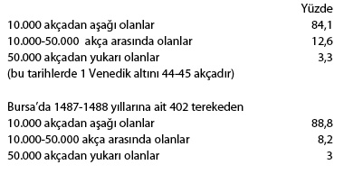
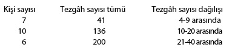
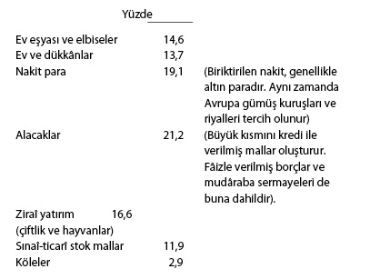

Toplumsal Yapı
Kırsal Kesim: Çift-Hane Sistemi81
Türkiye’mizin ana ekonomik karakteri ve sosyal yapısını Osmanlı dönemi belirlemiştir. Başka bir deyişle, küçük köylü-aile işletmelerine dayanan sosyo-ekonomik yapıyı, Osmanlı mîrî toprak rejimi ve çift-hane sistemine borçluyuz. 1950’ye kadar Türkiye ekonomisi ve sosyal yapısı Osmanlı dönemindeki asırlık geleneksel esas karakterini korumakta idi. Türkiye 1950-1960 döneminde traktörün yaygınlaşması ve tarıma pazar ekonomisinin girişi ile başlayan gelişme sonucu köklü bir değişiklik temposuna girmiştir. 1939’da 3.200 traktör varken 1959’da bu rakam 44.000’e ulaşmıştır. Geçimlik (subsistence) tarım ekonomisinin ana ürünü buğday-arpa ekimi, yerini gittikçe daha ziyade pazar ürünlerine, sınaî bitkilere, pamuk, üzüm, incir, tütün, pirinç, ayçiçeği ve mısıra bırakmaktadır.
Geleneksel karakterler nelerdir? Aşağıdaki tartışmamızın esas noktalarını bunun açıklanması oluşturacaktır.
Geleneksel tarım ekonomisinin esas üretim aracı, bir çift öküz ile çekilen sabandır. Bu, traktörün uygulanmasından önce, hayvanî kuvvetin en etkili biçimde kullanım teknolojisini gösterir. Eski Mezopotamya uygarlıklarından beri, kuru-ziraat (dry-farming) ile buğday-arpa ekimi yapan iklim kuşaklarında, bir çift öküzle çekilen saban, en ileri tarım teknolojisi olarak zamanla dünyanın öbür bölgelerine yayılmıştır. Sabanın odun veya demirden olması, yapım dinamiği ve başka özellikler tabii zamanla önemli değişiklikler getirmiştir. Fakat öküz gücünün yerini makine gücü alıncaya kadar tarım teknolojisinde esaslı bir değişiklik görülmemiştir. Çift öküz geleneksel tarımın traktörüdür. İleride göreceğiz ki, Bizans ve Osmanlı imparatorluklarında vergileme, öküz sayısına göre yapılmakta idi. Salgın sonucu öküzü ölen köylü çaresiz kalır, fakr u zarurete düşer ve hükümet anlayış göstererek vergi affına giderdi.
Genel köylü ekonomisi teorisyenleri, meselâ Marginalist Ekol, aile emeğini esas alır; fakat geleneksel tarımın traktörü saydığımız öküz gücünü hesaba katmaz. Öküz gücü üzerinde bu kadar durmamızın sebebi, ileride göreceğimiz gibi onun çift-hane sisteminin temel elemanlarından biri olmasındandır.
Geleneksel tarımın temeli olan emek birimi, hiç kuşkusuz, evlenmiş ve çoluk çocuk sahibi olmuş erkek köylünün simgelediği köylü ailesidir. Bu rejimde, köylü aile ünitesi esas itibarı ile, koca, kadın ve çocuklar ve çoğu zaman evlenmiş oğullarla torunlardan oluşur; bu “patriarchal” ve “patrilineal” bir aile tipidir. Koca, aile ekonomisinin, işletmenin son söz sahibi ve örgütleyicisidir. Ekonomik örgüte hâkimdir. Devlet, vergi mükellefi olarak onu tanır. Buradan toplumumuzda bugün bile, hiç olmazsa kır sektöründe patriarchal aile tipinin neden hâkim aile tipi olduğunu anlıyoruz. Osmanlı Devleti, kocası ölen kadının erkek evladı yoksa, elinden tarla arazisini alır ve başka bir köylüye aktarır. Eğer dul kadın, oğulları çalışma çağına gelinceye kadar, ırgatla idare edebilirse, onu bîve adıyla işletmenin sahibi tanıyabilir. Birçokları genel kanûnnâmede, müzevvec yani evli erkeğin, neden o kadar önemli bir yer tuttuğunu açıklayamamışlardır. Bütün Osmanlı tahrîrlerinde, yani vergi kaynaklarını belirleyen defterlerde, vergi-nüfus sayımında hâne, aileyi temsil eden kocanın adıyla tespit edilir.
Günümüzde toprak, köylü ailesinin mülkü olarak, tarım ekonomisinin en önemli elemanı ise de, Osmanlı rejiminde mîrî adı ile tamamıyla başka bir statü taşıyordu. Mîrî toprak rejimi, devlete bütün köylü sınıfını ve tarım ekonomisini kontrol ve düzenleme yetkisi veriyordu. Mîrî toprak rejimi ile ilgili bazı kilit kavramlar, bugüne kadar bütün yayınlara rağmen anlaşılamamış ve yanlış yorumlar süregelmiştir. Ayrıntılarına girmeden önce birkaç ana kavramı belirtmekte yarar görüyorum.
İlkin mîrî arazi, yani devletin rakabesini (mutlak mülkiyet hakkını) elinde tuttuğu arazi, bütün tarım topraklarını kapsamaz. Mîrî arazi, yalnız hububat ziraati yapılan, tarla olarak kullanılan arazidir. Bağlar ve bahçeler bunun dışında kalır. Çünkü, büyük kitlelerin geçimi, geçimlik ekonomi, ordunun ve şehirlerin iaşesi, hububat ekimine, başlıca buğday-arpa ekimine dayanır. Darlık ve açlık, hububat ekiminde noksandan ileri gelir. Devlet bu yüzdendir ki, tarla ziraatini, hububat ekimini kontrol altında tutmak zorunluluğunu duymuştur. Osmanlı kanûnnâmelerinde kesin bir madde vardır: Tarla, bağ ve bahçe haline getirilemez. Tarlaların devamlı işletimi, kanûnla garanti altına alınmıştır. Aile emek ünitesini, kısaca reâya çiftliğini, devlet daimî kontrol altında tutar. Bir çift öküzü olan aile, bir işletme ünitesi oluşturur. Hayvanî enerji ünitesinin, yani bir çift öküzün işleyebileceği toprak ünitesi, ekonomik bakımdan en verimli işletme olarak tanınmıştır. Bu raiyyet çiftliği, devlet için tarım ekonomisinin temel ünitesidir. Onun parçalanmasına ve kaybolmasına karşı bir sürü kanûn önlemleri alınmıştır. Özetle, belli bir ekonomik ve sosyal rejimin uygulanması içindir ki, devlet tarla arazisini kendi mutlak kontrolü altına almak gereğini duymuştur. Buna mîrî arazi rejimi diyoruz. Aslında, mîrî arazi kendi başına bir gaye değildir, vazgeçilmez bir düzendir. Bu nokta, şimdiye kadar yeterince anlaşılamadığından, belli bir tarım ekonomisi ve sosyal yapının sürdürülmesi için Osmanlı sosyal yapısı hakkında çeşitli sosyolojik modellerden alınan yetersiz teoriler ileri sürülmüştür. Yukarıda sözünü ettiğimiz bu ana ekonomik sosyal düzene biz çift-hane sistemi diyoruz (Tahrîr Defterlerinde çift-bâ-hâne).
Mîrî arazi rejiminde, aydınlanmasını gerekli gördüğüm ikinci nokta şudur: Mîrî topraklar dediğimiz devlet toprakları, başlıca iki kategoriye ayrılır: Tapulu arazi, mukata‘alı arazi.
Tapulu Topraklar
Bunlar, köylü aile birliklerine, tapu rejimi dediğimiz özel bir sistem içinde verilen arazilerdir. Tapu rejimine göre, tasarruf edilen, elde tutulan arazi, satılamayan, hibe ve vakf edilemeyen, fakat babadan oğula bir işletme birliği olarak geçen raiyyet çiftlikleridir. Köylü bunu kendisi işlemek zorundadır. Üretim işini kendisi düzenler. Üretim vasıtaları öküz, saban ve tohumu kendisi sağlar ve bağımsız bir işletme ünitesi olarak toprağı kendisi işler. Köylü şu anlamda hür ve bağımsız köylüdür: Devlete ve sipahiye, kanûnların emrettiği bedeni hizmetler dışında karşılıksız hiçbir hizmet yapmaya mecbur değildir. Onun emeğini kimse karşılıksız sömüremez. Devlet bu garantileri vermiştir. Zira, aksi halde, raiyyet çiftliği işlenemez ve vergiler ve sipahi dirliği gerçekleşemez. Düzen bozulur, bir kelime ile raiyyetin statüsünü de, çift-hane sisteminin gerekleri belirlemiştir. Ekâbir, raiyyeti kendi çiftlik veya vakıflarında işletmeye kalkışınca, devlet bunu önler; kanûnlarla, köylünün emek ve hürriyetini garanti altına alır.
Osmanlı İmparatorluğu’nda, toprağın olduğu kadar, köylü emeğinin de devlet kontrolü altında olduğu gerçeğini unutmamak lâzımdır. Hizmetler, angaryalar, bu açıdan incelenmelidir. Özetle, tapu sistemi, köylü aileleri tarafından çiftlik ünitelerinin bağımsız ve devamlı işletilmesini garanti eden bir sistemden ibarettir. Patrilineal irsiyet, yani babadan oğula intikal maddesi de bu devamlılığı sağlamak için konmuştur. İşte tapu rejiminin klâsik dönemdeki temeli budur. Sonraki dönemlerde, raiyyet çiftliği birimi, köylünün bağımsızlığı ve diğer elemanlar değişikliğe uğrayacaktır. Fakat 20. yüzyıla kadar küçük köylü aile işletmeleri rejimi ana hatlarında korunabilmiştir. Bizans ve Osmanlı imparatorluklarında reâya, yani çiftçi aileler ve toprak birimi (yani çiftlik, bir çift öküzle işlenebilen arazi ünitesi) daima titizlikle, büyüklere karşı korunmaya çalışılmıştır. İmparatorluk bürokrasisinin esas vazifelerinden biri, bu rejimi korumaktır. Bizans’ta dynatoi, Osmanlı İmparatorluğu’nda ekâbir’e karşı köylüler daima “fakir”, “yoksul” tabiri ile himayesi gerekli bir sınıf olarak ele alınmıştır. Bu sebeple, bu imparatorlukları köylü imparatorlukları diye karakterlendirmekte bir abartma yoktur. Toprak ve reâya üzerinde feodal kontrollerin ortaya çıkmasına karşı merkezî imparatorluk bürokrasisinin savaşması, bu imparatorluklar tarihinin en önemli fasıllarından birini ve belki en önemlisini oluşturur. Belki, bazı sosyolojik modellerin katı çerçevesinde kalmadan, bu savaşı tarihçi dikkatle araştırmakla, bu imparatorluklar tarihini bence en iyi biçimde açıklayabilir. Mîrî tapulu arazi, imparatorluk siyasetinin bulduğu ve korumaya çalıştığı ana imparatorluk rejimi olarak, eski çağlardan beri Akdeniz ve Orta-Doğu tarihine yön vermiş bir temel rejimdir.
Mukata‘alı Topraklar
Mîrî tapulu arazi yanında ikinci büyük kategori topraklar, mîrî mukata‘alı arazidir. Mukata’a sistemi, tapu sistemi yanında, tamamıyla ayrı bir toprak rejimini simgeler. Buradaki anlam ile mukata‘a veya kesim, bir devlet gelir kaynağını bir özel şahsa belli bir bedel karşılığı kiralamaktır. Bu, genel anlamda bir iltizamdır. Mîrî topraklarda mukata‘a sistemi şöyle uygulanmıştır. Tapuya verilmeyen, yani yukarıda açıkladığımız gibi, tapu sistemi denilen özel bir rejim altında bir köylü tasarrufunda bulunmayan araziyi devlet, belli bir kira karşılığı kişilere ihale eder. Burada kişi köylü olmayabilir, şehirli, esnaf, hatta asker de olabilir, köylüler de kişi veya toplu olarak mukata‘a ile araziyi tutabilirler. Bu çeşit topraklarda, tapu rejiminin kuralları uygulanmaz. Çünkü, hukuk bakımından mukata‘a tam bir kiralamadır. Kira bedeli, toplu bir miktar para olarak devletle kişi arasında bir sözleşme, mukavele ile belli olur. Mukata’a, kesim tabiri de buradan çıkıyor. Burada, karşılıklı bir anlaşma, kesişme ile rantın miktarı belli olmaktadır. Çoğu zaman, bu bir açık artırma ile belirlenir. Kiralamayı yapan kimse, ancak üzerinde anlaşma yapılan meblağı öder. Tahrîr defterlerinde mukata‘alı çiftlik veya mezra‘alar üzerinde toptan bir meblağ belirlenmiştir. Meselâ: “Mezra‘a-i Pınar der tasarruf-i Ali: 800 akça” gibi.
Devlet neden bazı toprakları mukata‘a ile verir? Bunun sebebi şudur: Tapu rejimine göre, reâya tasarrufu dışında, devlet elinde, doğrudan doğruya köylü tarafından işlenmeyen birçok arazi vardır. Örneğin, bir köy halkı çeşitli nedenlerle köyünü bırakıp kaçar. Yahut, bir köyde bir aile raiyyet çiftliğini terk edip gider ve bu arazi işlenmemiş kalır. Bu gibi çiftlik, mezra‘a, köy arazisi için, tahrîr defterlerinde hâlî kaydını bulmaktayız. Bunların harap durumda kalmaması, başka bir deyişle devlet, gelir kaynaklarını kaybetmemek için, bu tür toprakları mukata‘a ile vermeyi ve işletmeyi en iyi yol olarak bulmuştur. Boş kalacağına, devlet hazinesine bir gelir kaynağı olsun ve harap olmasın diye devlet bu toprakları tapu rejiminin kayıtları altında değil, tamamıyla serbest bir kiralama şeklinde kişilerin tasarrufuna verir. İşte, tahrîr defterlerinde gördüğümüz mukata‘alı çiftlikler, mezra‘alar bu çeşit topraklardır. Merkezî bürokrasinin asıl gayesi, bu çeşit mukata‘alı toprakları da, sonunda köylünün yerleştiği tapulu arazi şekline getirmektir. Mîrî topraklarda esas rejim, tapulu rejimdir. Gerçekten, biz yeni tahrîrlerde, bu çeşit çiftlik ve mezra‘aların, zamanla üzerinde köylü aileleri yerleşerek, tapulu arazi durumuna geldiğini tespit etmekteyiz. Bu süreç, Geç-Roma tarihinde boş kalan latifundia arazisi üzerine, dışardan gelen kolon ailelerinin yerleştirilmesine benzer. Tahrîr defterlerinde gördüğümüz bu iki hâkim arazi kategorisi, yani tapulu arazi ve mukata‘alı arazi ayırımı, yazık ki, şimdiye kadar açık bir şekilde araştırıcılar tarafından belirlenememiş ve bu yüzden yanlış yorumlara sapılmış; mîrî arazinin kişiler eline mülk-çiftlik olarak geçtiği şeklinde yorumlar yıpılmıştır.
Osmanlı İmparatorluğu’nun Bizans ve Selçuklu dönemlerinden devraldığı ve esas olarak Eski İran ve Geç-Roma İmparatorluğu dönemine giden bu temel sistemin ana unsurlarını yukarıda açıklamaya çalıştık. Bu rejimde çift öküzün ve aile emeğinin temel olduğu küçük köylü işletmeleri söz konusudur. Bu sistem, belli bir üretim tarzı, belli bir sosyo-ekonomik yapıyı simgeler. Osmanlı mîrî-tapulu arazi sistemini, ancak çift-hane rejimi çerçevesinde anlayabiliriz. Bir çift öküzü ve onun işleyebileceği kadar toprağı, tapu rejimi kuralları dairesinde tasarrufu altında bulunduran köylü ailesi, ziraî rejimin ana ünitesi olarak sistemin temelini oluşturur. Bu ünite, imparatorluk bürokrasisi için aynı zamanda bir ana vergi ünitesidir. Bu ünite çift resmi denilen bir vergi sistemine bağlıdır. Çift-hane bütün sistemin temel ünitesi olduğundan, kanûnnâmelerde ve tahrîr defterlerinde sırada daima ilkin çift resminden söz edilir. Çift-hane, defterlerde hâneyi temsil eden vergi yükümlüsü aile reisi adına bir (ç) harfi ile tespit olunur ve bu çift-hane ünitesini ifade eder. Biz, eski defterlerde “hane-bâ-çift” tâbiriyle bizzat Osmanlı kâtiplerinin bu üniteyi böylece adlandırdıklarını gördük. Bunu, araştırmalarımızda çift-hane şeklinde bir terim olarak kabul ettik. Burada, çift aslında bir çift öküz demektir. Bir çift öküzün işleyebildiği tarlaların tümü de, çiftlik adı almaktadır. Bizans İmparatorluğu’nda aynı üniteye, çoğu zaman çift karşılığı olarak zeugarion (ki bu da Farsça cuft, Latince jug terimleri ile aynı köktendir) denir. Bu, toprak olarak değil, bir çift öküz olarak kabul edilir ve vergi öküz miktarına göre belirlenir. Bazen zeugarion, çift öküzü değil, bizzat toprağı gösterir. Osmanlılar ise, toprağı, yani bir çift öküzün işleyebileceği çiftliği esas alırlar. Fakat çok az da olsa, öküzün de vergileme birimi olarak alındığı durumlar vardır.
Hane, köylü ailesidir, daha doğrusu ailenin üretici emek ünitesidir ve bu bakımdan vergilemeye esas sayılmıştır.
Çift-hane sisteminde belirtilmesi gereken esas nokta şudur: Aile emeği, bir çift öküz ve ikisinin birlikte işlediği arazi, tümü, bir üretim ünitesi ve dolayısıyla bir mâlî ünite sayılır. Alınan çift resmi, sadece şahsî (personal) vergi değildir. Daha çok, bu ünitenin vergilendirilmesidir. Başka deyimle, birleşik-kombine bir vergidir. Geç-Roma döneminde de jugum ve aile, birlikte, jugum-caput olarak kabul edilmiştir ve alınan vergi her ikisini kapsayan bir vergidir. Köylü-tarım vergisinin bu kombine niteliği anlaşılıncaya kadar, Batı tarihçileri iki yüzyıldan beri tartışmışlar, bir kısmı bu vergiyi kişi veya ocak vergisi, bir kısmı ise tümüyle bir toprak vergisi saymışlardır. Ancak son zamanlarda bunun kombine bir vergi, jugum-caput ünitesine ait bir vergi olduğu kesin olarak tespit edilebilmiştir.
Osmanlı çift-hane vergisi, işte bu kombine verginin bir karşılığından ibarettir. Akdeniz bölgesinde kuru ziraatle hububat ekimi yapan bütün memleketlerde esas tarım ve vergi sistemi, daima çift-hane sistemi olarak uygulanmıştır. Ekonomik bakımdan çift-hane, bir köylü ailesinin geçimini sağladığı ve devlete ait vergileri karşılayan bir artı-ürün ürettiği tipik bir üretim birimidir. Bu ünite, imparatorluk bürokrasisinin de titizlikle korumaya çalıştığı bir sosyal ve mâlî, fiskal ünite olarak kabul edilmiştir. Çift-hane, bu temel karakteri ile kır toplumunun temel hücresidir. Marginalist Ekol, aile emeğine dayanan bu üretim örgütünün, insanlığın bulduğu en verimli tarım işletmesi olduğunu ileri sürer. Chayanov’a göre, bu basit bir tarım tipi olmaktan ziyade gerçekte bir üretim tarzıdır. Ona göre bu üretim tarzı Asya’da, bu arada Rusya’da ekonomi ve toplumun tarihî yapısını açıklayan bir üretim tarzı olarak anlaşılmalıdır ve bu itibarla Marksist teorideki feodal üretim tarzı gibi, bağımsız, kendine özgü bir üretim tarzı (mode of production) olarak benimsenmelidir.
Asya bürokrasileri için ideal ünite, çift öküze sahip köylü ailesidir, devlete bir altın veya karşılığı 22 veya 25 akça öder. Bekâr erkek, defterlerdeki terimi ile mücerred, işgücü kısıtlı olduğundan, çift-hane sisteminin en aşağı basamağında yer alır, 6 akça öder. Gerçi kır toplumunda sosyal realite, bürokratların reçetesine uymaz. Bu toplumda çiftlik tasarruf eden aileler yanında, tabii toprağını kaybetmiş topraksız aileler veya yeterince toprağı olmayan aileler de vardır. İşte devlet bunlara, çift resmi sistemi içinde farklı bir statü vererek ayrı kalemlerde toplar ve vergi yükünü bunlar için toprak esasına göre değil, emek kapasitesine göre belirler. Böylece, vergi bakımından biz raiyyet rüsûmu sisteminde şöyle bir kademelendirme görüyoruz. İlkin, çiftler yani çiftliğe sahip köylü aileleri gelir, sonra bu toprakların yarısı kadar bir araziye sahip nîm-çiftler, ondan sonra aile emeği esas alınarak belirlenen çiftçiler, yani bennakler, ondan sonra evli olmayan, fakat bir gelir kaynağı üreten bekârlar yer alır. Bu sonuncular, mücerred, kara veya caha adıyla anılan köylülerdir. Nihayet, kocasının çiftliğini işletebilen dul kadınlar ki bunlar da bîve adıyla aynı sistemde yer alır.
Köylü toplumunu böyle bir şematik vergi sistemi içinde toplayan bu rejim, Osmanlı bürokrasisinin kanûnnâmelerinde ve tahrîr defterlerinde tespit edilmiştir. Çift esasına bağlı raiyyet vergilerini bundan önceleri raiyyet rüsûmu üzerindeki araştırmalarımızla ortaya koymuştuk. Fakat o zaman bu vergi sisteminde alınan resimlerin, kır sosyal yapısına bağlı bir sistem olduğunu tümüyle gösterememiştik. Sistemin, sosyo-ekonomik bir yapıya dayandığını ve imparatorluk bürokrasisinin böyle bir sosyal yapıyı bütün toprak ve vergi sisteminin temeli olarak benimsediğini o zaman fark etmemiştik. Öyle görünüyor ki, Geç-Roma İmparatorluğu’ndaki colon, Galya’daki mansus, Bizans İmparatorluğu’ndaki zeugarion ve Osmanlı çift-hanesi, hepsi daima köylü aile emeğine ve çift öküz-saban teknolojisine dayanan küçük köylü işletmelerini ifade etmektedir.
Bu sistemde bütün kır toplumu, çift sahibi olanlar, az toprak sahibi olanlar, topraksızlar, fakir ırgatlar olarak tasnif olunup, imparatorluk tahrîr defterlerinde belli bir sisteme göre kayıt ve tespit olunmaktadır. Roma ve Bizans’ta olduğu gibi, Osmanlı İmparatorluğu’nda da, kır bölümünde köylü, defterdeki kayıtlarla fiskal bir statü kazanmaktadır. Yeni bir tahrîre kadar devam eden bu statü, aynı zamanda kır toplumunu sosyal bakımdan biçimlendirmektedir. Başka bir deyişle, imparatorluk bürokrasisi, toprak ve reâya köylü üzerinde tahrîr sistemi yoluyla yaptığı kontroller sonucunda bizzat bu toplum düzenini bir dereceye kadar etkilemekte, hatta yaratmış olmaktadır. Böylece, kendiliğinden serbestçe ortaya çıkan bir toplum düzeni yerine, daha ziyade devletin ağır bastığı bir düzen, bir estate, sınıflandırma düzeni ortaya çıkmaktadır. Bununla beraber, bu durumu fazla abartmamak gerekir. Zira bürokrasinin yaptığı sınıflandırma kır hayatında kendiliğinden meydana gelen sosyal farklılıkları tamamıyla bertaraf edemez, fiskal sistem daha ziyade ona uymaya çalışır. Devlet, mîrî arazi ve tahrîr sistemi sayesinde, toprak ve reâya üzerinde sıkı kontrolünü sürdürmekte, çiftliklerin dağılmasını önlemeye çalışmakta, tarlaların bağ bahçe haline gelmesini, büyük ekâbir çiftliklerinin ve plantasyonların ortaya çıkmasını önlemekte, sonuç olarak son derece tutucu bir sosyal düzen idame etmektedir. Osmanlı İmparatorluğu’nun ve başka geleneksel imparatorlukların, değişime ve gelişmeye, yeni ekonomik sistemlerin ortaya çıkışına direnmesinde, durgun (stagnant) bir sosyo-ekonomik yapıya bağlı olmasında, mîrî arazi rejimi ve çift-hane sistemi başlıca sorumlu görülmektedir. Fakat unutmayalım ki, bu sistem Türkiye’de günümüzde küçük aile işletmelerine dayanan sosyal yapının da tarihi temelidir.
Merkezî kontrolün kaybolduğu yerlerde, meselâ İran’da, toprak ve köylü küçük feodal bir grubun kontrolü altına düştüğü halde, Osmanlı Devleti’nde böyle bir gelişme büyük ölçüde önlenebilmiştir. 18. yüzyılın mâlikâne-mukata‘a sisteminde bile, devlet toprak üzerinde rakabe hakkını koruyabilmiştir. Mülkün vakıf haline getirildiği durumlarda bile devlet, toprak ve reâya üzerinde kontrol hakkından vazgeçmemiştir. Âyânların kontrolleri altına geçen köyler ve büyük çiftlikler tekrar devlet müsadaraları sonunda mîrîye geçmiştir. Yani, merkezî devletle eyâletlerde toprak ve köylü emeğini kontrolü altına geçirmeye çalışan “kudret sahipleri” arasında her dönemde görülen savaş, hiçbir zaman kişilerin üstünlüğü ile bitmemiştir. Marksist yoruma göre, bu savaşın asıl konusu, direkt üretici olan köylü reâyanın artı-ürünü üzerinde olup toprağın esas mülkiyeti üzerinde değildir. Burada sorun, bu artı-ürünü seçkin sınıf içinde hangi grubun ele geçireceği sorunu idi. İmparatorluk düzeni, genel kanûnlar çerçevesinde hareket ettiğinden, daima küçük köylünün koruyucusu olarak ortaya çıkmış, ekâbirin, kudret sahiplerinin, tekâlif-i şakka veya angaryalar yoluyla kontrolsüz sömürüsünü önlemeye çalışmıştır. Bu bakımdan da, imparatorluk merkezî idaresi ile küçük köylü arasında bir güven ve bunu ifade eden bir imparatorluk “adâlet” ideolojisi ortaya çıkmıştır. Bu ideolojiyi adâletnâmeler çerçevesinde uzun uzadıya anlatmaya çalıştık. (bkz. s. 324-328, “Devletin Yolsuzlukları Ortadan Kaldırmaya Çalışması: Adâletnâmeler”) Bu ideoloji sayesinde, Tuna üzerinde Sırp çiftçisi veya Amasya köyündeki Türk köylüsü, yersel haksızlıklara karşı daima Çarigrad’da, Dersaadet’te oturan pâdişahın himayesini aramıştır. Devletin mâlî, fiskal çıkarları, belli bir sosyal adâlet ve “Dîn u devlet” ideolojisi ile politik bir sistem halinde örgütlenmiş, merkezde uzman bir küttâb sınıfı, gelişmiş bir tahrîr ve defterhâne arşivi ile, ayrıntılı bir defter tutma sistemi sayesinde çift-hane sistemini başarı ile uygulamıştır.
Tabii, sistem realitede, bürokrasinin istediği gibi pürüzsüz işlememiştir. İmparatorluk kanûnlarında ve defterlerde ifadesini bulan ideal düzen ile kır toplumunda gerçek gelişmeler arasında bazen esaslı farklar ve çatışmalar ortaya çıkmıştır. İmparatorluk bürokrasisi, bu çatışmaları gidermek için biteviye yeni kanûnlar çıkarma gereğini duymuştur. Gerçek durumları incelemek için, az kullanılmış olmakla beraber elimizde tahrîr defterleri gibi zengin ve ayrıntılı başka bir kaynak vardır. Bu da köy kadı sicilleri ve terekeleridir. Her kaza dairesi, kadı’nın hükmü altında 40-50, bazen 300 kadar köyü toplamaktadır. Bu köylerde ortaya çıkan hukukî sorunlar, o şehir veya kasaba kadısının mahkemesine gelir. Öyle anlaşılıyor ki, kadı bu köy davaları için çoğu zaman bir nâib atamaktadır. Şer’iyye sicilleri arasında, köy sorunlarını kapsayan özel sicil defterleri, bu arada ölenlerin terekelerindeki eşyayı kıymetleri ile tespit eden tereke defterleri, köy sosyal ve ekonomik hayatı üzerinde başka hiçbir kaynakta bulamadığımız ayrıntıları içermektedir.
Hatırda tutmak gerekir ki, bu köyler şehir ve kasabalara yakın köyler olduğundan, özel koşullar altındadır. Bu yüzden bunlar üzerinde yapılan genelleştirmelerde dikkatli olmak gerekmektedir. Meselâ, bu köylerde birçok çiftlik ve mezra‘a satışlarına bakarak, belli bir dönemde mîrî arazinin geniş ölçüde özel mülkiyete geçtiğine dair genellemeler yapılmıştır. Bu satışlar, çoğu tasarruf hakkının satışından ibaret feraglardır veya mukata‘alı arazi satışları, daha doğrusu kiralamalarıdır. Osmanlı İmparatorluğu’nda çeşitli bölgelerde çeşitli köy tipleri vardır. Fizikî ve etnik şartlar, yerleşim şartları, kültür, politik-askerî faktörler köylerin büyüklüğünü, nüfusunu, yerleşim modelini ve ekonomik faaliyetleri belirler. İmparatorluk ölçüsünde bir Osmanlı köy tipinden söz etmek tabii olası değildir. Bununla beraber, hiç olmazsa imparatorluğun çekirdek bölgesinde, yani Anadolu ve Rumeli’de, Osmanlı toprak ve vergi kanûnlarının etkisi altında, köy yerleşmelerinin özel bir karakter kazanmış olmasından ve böylece Osmanlı İmparatorluğu’na özgü belli bir köy tipinden söz edebiliriz.
Şehir: Ticaret, Kapital Oluşumu, Vakıf82
Öyle görünüyor ki, Osmanlı İmparatorluğu’nun ekonomik düzeni ve ekonomide ana prensipleri, eski çağlardan beri Orta-Doğu imparatorluklarına hâkim bulunan geleneksel bir devlet-toplum anlayışına dayanmaktadır. Bu anlayış, yöneticilerin düşünce ve davranışlarını belirlemek bakımından pratikte büyük bir önem taşımakta idi. Bu pragmatik devlet anlayışına göre, devlet, temelde hükümdarın kuvvet ve kudretinden ibarettir. Bir tek hükümdarın sınırsız kudretini haklı göstermek için, İslâm düşüncesinde şu yorumlar yerleşmiştir: Eski Yunan düşüncesinden gelen bir akıma göre, toplum üzerinde bir hükümdarın salt otoritesi, insanların toplum halinde yaşayabilmesinin tek yoludur. Öbür yandan, İslâm fakîhlerine göre, siyasî otorite, Şerîatın uygulanabilmesinin tek yoludur. Yorum şekli ne olursa olsun, İslâm devletinde, daha eskiden olduğu gibi, devleti yapan bütün elemanlar, yani ahali, ülkenin zenginlik kaynakları, yalnız ve yalnız hükümdarın kudretini desteklemeye ve artırmaya hizmet etmelidir. Bu nedenle, bütün siyasî-toplumsal örgüt, her türlü ekonomik faaliyet bu amaca göre hükümdar tarafından ayarlanmıştır. Halk, hükümdarın otoritesini temsil edenler (yöneticiler, asker, din adamları) ve tebaa (reâya) olarak ikiye ayrılmıştır. Tebaa üretim işleriyle uğraşır ve vergi verir; bu sınıf içinde hiyerarşik sıra ile çiftçiler, tüccâr ve hirfet erbâbı yer alır. Herkesi kendi sınıfı içinde tutmak ve bir sınıf üyelerinin ötekine geçmesini önlemek devletin birinci görevidir ve siyasî-sosyal düzenin ve uyumun salt koşulu sayılmaktadır.
Sosyal devingenlik (social mobility) dediğimiz şey, Orta-Doğu imparatorluklarında felâket sayılmakta idi. Bu rejim, sosyal düzeni olduğu kadar ekonomik düzeni de devletin kontrolü altına almıştır. Gerçekte, üretim ve dağıtım faaliyetlerini belirleyen o zamanki özel koşullar böyle bir rejimi, ideal bir rejim olarak kabul ettirmekte idi. Öyle görünüyor ki, kapitalist bir topluma götüren açık bir rejim, insanlık tarihinde ancak ulaştırmada, üretim araçlarında ve üretim hacminde belli bir düzeye gelindiği zaman olasılık kazanmıştır. Osmanlı İmparatorluğu, klâsik devrinde (15.-16. yüzyıllar) sosyal sınıfları ve ekonomiyi ilgilendiren bütün önlemlerinde, Orta-Doğu imparatorluklarından gelen bir bürokrat grubunun aktardığı böyle bir rejimi ideal olarak benimsemiş ve titizlikle uygulamaya çalışmıştır. Şunu da eklemeliyiz, Orta-Doğu devlet yönetimi, ekonomik faaliyetleri geliştirmek, reâyadan her sınıfın üretimini en yüksek noktaya çıkarmak için önlemler almayı gerekli sayar. Eski Hind–İran uygarlıklarına kadar çıkan nasîhatnâme’lerde, devletin bu amaçla bayındırlık işleri yapması ve yollarda güvenliği sağlaması en önemli görevleri arasında sayılmıştır. Fakat, bütün bu faaliyetlerin amacı sonunda hükümdarın hazinesini doldurmak üzere vergi kaynaklarını artırmaktır.
Üretici sınıflar içinde çiftçi ve sanatkârlar, tüccârdan ayrı bir statü altına konmuş, onların üretim faaliyetleri ve kazançları devlet kanûnları ile sıkı kontrol altına alınmıştır. Çünkü bu rejime göre çiftçi ve sanatkârlar, gerekli ihtiyaç maddeleri üreten, böylece üretimleri sosyal-siyasî düzenin korunması ile sıkı ilişkisi bulunan bir sınıftır. Köylünün veya bir hirfet üyesinin tam bir serbestlik içinde, sınırsız üretim faaliyetlerine girişmesine olanak tanınmamıştır. Onlar, ancak devletin koyduğu kural ve kısıtlamalar içinde üretim faaliyetlerini yürütebilirler. Yalnız tüccâr, Orta-Doğu toplumunda kapitalist olma imkânı ve koşullarına sahiptir. Tüccâr demek, yalnız bölgelerarası ticâretle uğraşan veya uzak yerlerden gelen malları satan büyük işadamı demektir. Şehirde kendi yaptığı malı satan hirfet erbabı veya onların malını ikinci elden satan küçük esnaf, kesin olarak tüccâr kavramı dışında bırakılmıştır. Tüccâr, sattıkları mal çeşidine göre hirfet halinde örgütlenmiş olmakla beraber, hisba (bkz. s. 266-276) kuralları ile bağımlı değildir. Bu nokta, onları hirfetlerden ayıran en önemli özelliktir. Hirfet erbabının hammadde alışı, üretimi ve satışı kısıtlamalar altında olduğu halde, tüccâr her şekilde, istediği kadar servet biriktirebilir, gittikçe daha fazla servet yapabilir, yani kapitalist amaç peşinde koşabilir. Onun yatırımlarının çeşidi ve sınırı kısıtlanmamıştır. Orta-Doğu toplumunda esas kapitalizmin, ancak ticarî kapitalizm şeklinde var olduğunu söyleyenler büyük ölçüde haklıdırlar.
İslâm kaynaklarında, tüccârın temel zenginliğinin nakit para olduğu her zaman belirtilmiştir. Onlara göre, esas zenginlik nakit paradır. Bununla beraber, tüccârın zenginliğini çeşitli şekillerde saklaması, yani nakit para ile beraber inci, mücevherat, değerli kumaş, köle, çiftlik ve hayvanat üzerine yatırması örgütlenmiştir. Gerçekten, Osmanlı tereke defterleri (kadı sicillerinde), zenginlerin pratikte bu öğüde uyduklarını açık bir şekilde ortaya koymaktadır. Bu arada, toprağa gömme yöntemi de geniş ölçüde uygulanmaktadır. Buna karşı, esas kapitalist düşünceye uygun olarak, paranın her zaman işletilmesi, nemasız bırakılmaması gerektiği hakkında aynı kitaplarda gördüğümüz öğütler, esasen genel bir eğilimin anlatımıdır. Osmanlılarda, toplumun bütün sınıflarında, nakit serveti işletmek için büyük bir istek vardı. Nakit servetin çoğalması için başvurulabilecek kişi ancak tüccârdır. Nakdî zenginliğin en çok kâr getirdiği yatırım alanı, ticârettir. Küçük büyük nakit servetler, commenda (mudâraba, mukârada) yoluyla ticarî kapital haline gelmektedir. Mudâraba, sefere çıkan tüccârla, kârı bölüşmek üzere sermaye yatırım sözleşmesidir; commenda, Orta-Doğu toplumunda her zaman önemini korumuştur.
Kitâbu’l-İşâra’da (11.-12. yüzyıllar) tüccâr üç kategoriye ayrılmıştır. 1. Depo eden (bazzân) tüccâr. Bu çeşit tüccâr, malı, arz fazla, talep az olduğu, yani fiyatların düşük olduğu zaman alır; bu durum tersine dönünce, yani fiyatlar yükselince satar. Başka bir deyişle, fiyatlarda zamanla oluşan farktan yararlanır. Bu tüccârın, özellikle mevsime bağlı maddeler, en çok tahıl üzerinde uğraştığı verilen örneklerden anlaşılmaktadır. Bu tüccâr, pazara malını birden değil, yavaş yavaş arz etmeye, fiyat iniş ve çıkışlarını izlemeye ve bulunduğu ülkenin siyasî koşullarını araştırmaya dikkat eder. 2. Seyahat yapan (rakkâd), malı bir bölgeden ötekine götüren bu tüccâr, bölgelerarasında fiyat farklarından yararlanır. Bu nedenle, her iki bölgedeki fiyat farklarını, yol ve gümrük giderlerini iyi hesaplamak zorundadır. 3. Techiz eden (mucahhiz) tüccâr; bu çeşit tüccâr, mal gönderdiği yere güvenilir bir temsilci yerleştirir. Güvenilir kimseler aracılığı ile ona mal gönderir. Bu temsilci, gelen malı satar, karşılığında mal alır. Kararlarında tamamıyla serbesttir. Her çeşit kârda ortaktır.
Kitâbu’l-İşâra, aslında neo-phythagorian Bryson’un eserine dayanmakta ise de, onda gösterilen tüccâr tipleri, İslâm toplumundaki duruma oldukça uymaktadır. Bunu, Helenistik çağdan beri Orta-Doğu’da benzeri ticâret koşullarının ve geleneklerinin devam etmiş olmasıyla da açıklayabiliriz. Osmanlı döneminde, ticârete ait belgelerde iki tip tüccâr, yani kervan ve deniz ticâretiyle uğraşan tâcir-i saffâr ve bir merkezde oturup oradan işi yöneten tâcir-i mütemakkin veya mütekâid ayırt edilmekte idi. Eskiden beri İslâm hukukçuları, şehir yöresinde (hâzira) ticâret ile uzak mesafede (gâ’iba) ticâreti, ticâretin iki ana şekli olarak belirlemişlerdir. Şehirde oturan tüccârın sattığı mal, normal olarak uzak bölgelerden gelen ithal malıdır. Devlet, tüccârın, yöresel tüketim maddeleri üzerinde ticâret spekülasyonu yapmasına izin vermezdi. Bir yerden ihracına izin verilen mallar ise, devlet tarafından belirlenmiştir. Veya belli bir maldan yerli halk bütün gereksinimlerini karşıladıktan sonra, tüccârın bu malı satın almasına izin verilirdi. Bazı şehirlerde, dış pazar için çalışan bazı sanayi kollarının gelişmiş olduğu bilinmektedir (Osmanlılarda ipekli, pamuklu, sof sanayii). Ticarî kapitalizmin, yerli endüstriyi kendine bağımlı bir hale getirmesi sonucunu veren bu gelişmiş aşama hakkında ileride ayrıca bilgi vereceğiz.
Kitâbu’l-İşâra’da üçüncü tip tüccâr, yani mücehhiz tüccâr, Orta-Doğu’da çok uygulanan commenda kapsamına girer. Herhalde, burada üç tüccâr tipi de, bölgelerarası ticâretle uğraşırlar. Burada, ticâretin çeşidinden daha çok, yatırımın hukukî temelleri göz önüne alınmıştır. Şunu da eklemek gerekir ki, Kitâbu’l-İşâra’da tüccâra verilen öğütlerde esas düşünce, mümkün olduğu kadar, “fazla kâr” sağlamaktır. İslâm hukukunda yer alan ticâretle ilgili esaslar (şirket şeklinden bahseden Kitâbu’l-Şirka; ticarî uygulamalardan, bu arada para ticâreti, murâbaha ve ribâ’dan ve kredi şekillerinden söz eden Kitâbu’l-Buyû’; commenda’dan bahseden Kitâbu’l-Mudâraba) kuşkusuz, yüzyıllardan beri İslâm toplumunun gereksinmelerine yanıt vermek üzere toplanmıştır. Osmanlı devrindeki kadı sicilleri ve öteki belgeler, bu esasların ticârette tümüyle uygulandığını göstermektedir. Burada, yalnız konumuz bakımından önemli bazı kuralları kısaca hatırlatmak gerekir.
Şirket şekilleri, anaparanın oluşumu, yatırım ve kâr için açık ve tutarlı kurallar koymaktadır. Kredi üzerinde ortaklık (şirketü’l-vucûh) ve commenda (mudâraba veya mukârada), anapara ile girişim ve yaratıcılığı ve uzmanlığı bir araya getirmeye yarayan ve sermayenin büyümesini sağlayan önemli bir şekildir. Aşağıda, Osmanlı toplumunda bunun uygulanmasına ait örnekler vereceğiz. Şirketü’l-vucûh’ta taraflar, kredi ile satın alıp ticâret yaparlar ve belli bir zaman içinde anaparayı sahibine geri verirler. Kâr, ortaklar arasında yarı yarıya veya anlaşma koşullarına göre paylaşılır. Mudâraba’ya gelince, bu bir ticarî yatırımdır; taraflardan biri işgücünü, diğeri anaparayı koymak koşulu ile, o malın kârında ortak olmadır. Fıkıh kitaplarında verilen örnek şudur: Bir kimse başka birisine para verir, o bu para ile seyahat edip ticâret yapar. Kazanılan kârı aralarında bölüşürler. Seyahat eden taraf, yolculuk sırasında bu malı tamamen istediği gibi kullanım hakkına sahiptir. Yalnız bu anaparayı borç veya rehin veremez. Kâr hakkında önceden konan bir koşul, mudârabayı bozar. Mal kaybolursa, o bedelini sermaye sahibine ödemek zorunda değildir, kâra ortaktır, ama kârın hepsine hak iddia edemez. Eğer mudâraba sözleşmesi bozulursa, sefer yapan kâr olsun olmasın bir ödenek isteyebilir. Mudâraba, ancak sermaye ortaklık malı olabilecek bir şey ise doğrudur. Anapara, ticâret için değil, bir mal yapımı için verilmiş ise, bu tamamıyla ayrı kategoride bir ortaklıktır (şirketü’l-sanâyi va’t-takabbul). Bu durumda taraflardan biri, yalnız sermaye, diğeri sadece güç ve yaratıcılığını koyabilir. Yahut, her ikisi anaparayı dışarıdan sağlayarak bir üretim işini ortaklaşa üzerlerine alırlar, kârı paylaşırlar.
Görülüyor ki, bu esaslar, anaparayı yatırım olarak kullanma olanağı veren hukuk prensipleridir. Yatırılan anapara da tabii bu büyümeden payını almaktadır. Bu da, çeşitli yollardan yasal bir şekle sokulan fâiz (ribâ) alma şeklidir. İslâm toplumunda fâizle para işletme ve diğer kredi şekilleri hem çok eski, hem çok yaygındır. Osmanlılarda yalnız gayrimüslimler değil, fakat Müslümanların (bu arada din adamlarının ve vakıfların) fâizle para işletmede ileri gittiklerini aşağıda göreceğiz. Bazı fakîhlere göre, ribâ (fâiz) alınması câiz görülen mallar (mal ribâvî) arasında başta altın ve gümüş vardır.
İslâm hukukunda “anonim şirket” kavramının bilinmediği kaydedilir. Bununla beraber, bir anonim kuruluş olarak, İslâmî vakıf kuruluşunun, İngiltere’de ancak 13. yüzyılda meydana çıkmış olan trust kuruluşu ile hukukî bakımdan aynı temellere dayandığı savunulmuştur. Ne olursa olsun, han, hamam gibi büyük işletme kuruluşları bakımından ele alındığı zaman, vakfın İslâm toplumunda kapital oluşumu konusunda özel bir yeri vardır.
İslâmî vakfın amacı, bir hayır kurumu meydana getirmektir; vakfın varlığı, Tanrı için hapsedilmiş verim getiren bir şeydir. Onun yalnız verimi, belli bir hayır işi için harcanır. Böylece vakıf, kişisel olmayan ve sürekli-ebedî bir ana sermayeye dayanır. Bu sermayenin işletilmesi, kadı tarafından düzenlenen ve saklanan vakfiyye ile saptanmıştır. Vakfiyyede vakfın amacı, gelir kaynakları, bu gelirin nasıl kullanılacağı, nasıl korunup artırılacağı belirlenmiştir. Vakfiyyenin kadı tarafından onaylanması, özellikle Osmanlı Devleti’nde görüldüğü gibi, hükümdarın onayından sonra hukukî nitelik kazanması, onun şartnâme (charter) niteliğini belirtir. Bununla beraber, vakıf koşullarını kimse, hükümdar bile değiştiremez, bozamaz. Bunlar kesinlikle değiştirilemez dinî-ilâhî sanksiyona dayanır. “Şart-i vâkıf, nass-i şâri‘ gibidir.” Vakıfta amaç, Allah yolunda bir hayır olmakla beraber, genellikle vakıftan belli bireyler faydalanır. Özellikle, aile (evladiye veya zurrî) vakıfları, gerçekte belli aile çıkarlarını korumak amacı ile kurulmuştur. Vakfın varlığı, gelir kaynağının çalışmasına bağlı olduğundan, vakfı yöneten kişinin faaliyeti, “sermaye’nin korunması ve artırılması” noktasında toplanır. Birçok vakıf, gelirin artırılmasını ve vakfın genişletilmesini mütevelliye bir görev olarak yüklemiştir.
Bu vakıf, iki grup kuruluşu içine alır. Bir yanda hayır amacıyla kurulmuş olan tesisler (cami, medrese, hastane, imâret, çeşme, köprü, zâviye vb) öbür yanda bu gibi tesislerin giderlerini karşılamak üzere kurulan ekonomik tesisler. Bu ikinciler, kâr getirme amacıyla gerçek iktisadî yatırımlardır. Bu kuruluşlar, bir ziraî işletme, kira getiren akaret, hamam, aşevi, mezbaha gibi kurumlar, emeği işletilen köleler veya sadece nemâ getiren bir nakit sermaye şeklinde olabilir.
Vakfın yönetimi için vakıf, bir yönetim müdürü (mütevellî) ve büyük vakıflarda onu sürekli kontrolü altında bulunduran bir nâzır belirler. Mütevellî, vakfın devamından, vakfiyyedeki koşulların yerine getirilmesinden ve gelir kaynağının korunma ve geliştirilmesinden sorumludur. Bu amaçla, o iktisadî yatırımlara girebilir, vakfın gelir fazlasından yeni yatırımlar yapabilir. Vakfın yönetiminden ikinci derecede sorumlu olan hizmetliler ile mütevelli, senede bir kere bir araya gelir, vakfiyyeye göre mütevellinin geçen yıl içindeki işlerini ve hesaplarını gözden geçirir. Heyet gerekirse kadıya başvurup mütevellinin değiştirilmesini isteyebilir. Vakıf muhâsebesi, Osmanlılarda devleti temsil eden biri, genellikle kadı tarafından da ayrıca kontrol edilir; bu kontrol velâyet-i âmme, yani devletin genel kontrol otoritesi ve kontrol hakkı prensibine dayandırılır; vakıf yönetim bakımından kendi kendini yöneten özel bir kuruluştur. Onun önceden konmuş şartnâmesinin (charter), kurallarını kimse değiştiremez ve bozamaz; vakfiyyeye, atanan mütevelli dışında kimse karışamaz veya herhangi bir kullanımda bulunamaz. Başka bir deyişle, vakıf bir özel firmanın hukukî garantilerine sahiptir.
İşte bu güvenceler altında vakıflar, İslâm toplumunda kuruluş ve çalışması bakımından sürekli büyük sermaye yatırımları ve iktisadî işletmeler özelliğini kazanmıştır. İleride, Osmanlı ülkesinde vakfın uygulanması ele alınınca, bu noktalar daha iyi görülecektir.
Yönetici sınıfın idare felsefesini gösteren nasîhatnâmelerde ve benzeri kaynaklarda, tüccâr hakkında görüşler olumludur. Hükümdara verdiği nasîhatlerde Kutadgu Bilig’de (yazılışı 11. yüzyıl) “daima kâr peşinde koşan, bütün dünyayı dolaşan” tüccârın, hükümdara ve halka, dünyanın başka uzak yerlerinden kıymetli, nâdir eşyâyı bu arada ipeklileri, kürkleri, incileri getirdiği söylenir, onların kâr ve zarar konusunda çok titiz olduklarını hükümdarın unutmaması belirtilir. Kutadgu Bilig, tüccârın, uzak yerlerden bilgi getiren ve hükümdarın ününü uzaklara yayan bir eleman olarak önemine de dikkati çeker, bu sebeple kendilerine her zaman iyi davranılması gerektiğini vurgular. Tüccâr hakkında güzel hadîsler ve sözler vardır. “Tüccâr, iki dünya saadetine mazhardır.” Tüccâr korporasyonunun pîri, Hazret-i Peygamber Muhammed’dir. 15. yüzyılın ikinci yarısında yazılmış bir nasîhatnâmede, hükümdara şu öğütler yapılır: “Hükümdar memlekette olan tâcirleri hoş göre, dâîm onları reayetle gözliye, onların ticâretiyle memleket abâdân olur ve onların bizâ‘atleri [becerileri] ile âlem içi erzan [ucuzluk] olur, onların vasıtasiyle Pâdişahın nâm-ı haseni [güzel adı] etrafa gider ve onların sebebiyle memleket içinde olan emvâl artar.”
İslâm toplum idealinin ve hukukunun, başlangıçtan beri, yükselen bir tüccâr sınıfının düşünce ve amaçlarına uygun bir biçim kazandığı hakkındaki görüşlere hak vermek gerekir. Fakat, aslında bunu İslâm dininden ziyâde Orta-Doğu toplumunda İslâm’dan önce hâkim devlet-toplum geleneklerine bağlamak gerekir. Hânefî mezhebinin kurucularından Şaybânî’ye göre, “Ortaya çıkan Müslüman tüccâr sınıfının iyi bir yaşam için çabaları, İslâmiyete aykırı bir şey değildir, bu aksine bir dinî ödevdir.” Şaybânî, lüksü, dine aykırı görmez, övülmeye değer bulur.
Özetle, Orta-Doğu toplumunda tüccâr sınıfı birçok fonksiyonları ile devletin ve yönetici sınıfların vazgeçilmez bir yardımcısı olduğundan, devlet ve hukuk ona ayrıcalıklı bir yer tanımıştır. Bu fonksiyonların başlıcaları: Birikmiş büyük nakit servetiyle tüccârın devlet mâliyesinde mültezim sıfatı ile çeşitli biçimlerde hizmet etmesi, böylece halk ile devlet arasında aracı rolü oynaması, gümrüklerde büyük nakit gelir sağlaması, uzak bölgelerden seçkin sınıfın istediği malları getirmesi ve nihayet ajan ve elçilik görevleri görmesi. Öbür yandan devletle bu sıkı işbirliği, tüccâr ve sarrâf sınıfı için anaparayı işletmek ve durmadan artırmak, yani kapital yapmak için olanaklar sağlamakta idi.
Tüccârın Orta-Doğu toplumunda kazandığı ayrıcalıklı durumu, yalnız yönetici sınıflarla çıkar ve işbirliğinde aramak doğru olmaz. Tüccârın, belirli koşulların biçimlendirdiği ekonomi sistemindeki fonksiyonunu hesaba katmak gerekir. Bölgelerarası ticâret yalnız lüks ihtiyacını değil, büyük şehirlerin yiyecek ve hammadde ihtiyacını da karşılamakta, özellikle dokuma endüstrisine ait hammaddeleri (ipek, yün, pamuk, boya, şap) ulaştırmakta ve üretilen mamûl malları uzak pazarlara götürüp dağıtmakta idi. Bu ticâretin durması veya yavaşlaması, şehir ekonomisi için yıkıcı sonuçlar doğurmakta idi. Buna karşı ulaştırmanın son derece güç ve tehlikeli koşullar altında bulunması, tüccârlığın büyük sermaye, özel bilgi, yetenek ve cesaret isteyen bir meslek olması nedeniyle, bölgelerarası ticâret ufak bir grubu çekmekte idi. Bu yüzden büyük tüccâr, hâceler (hocalar) bedestanda oturur, bölgelerarası ticârette seferde tecrübe kazanmış kervan tâcirlerini veya kendi âzâdlı kölelerini kullanırlardı. Bölgelerarası ticârette, deniz ve büyük nehirler kıyısında bulunan veya denize yakın merkezler imtiyazlı durumda idi. Bölgelerarası ticâret, ancak fiyat farklarının çok yüksek ve sonuçta kârın yeteri kadar büyük olduğu durumlarda gelişebilirdi. Bu yüzden baharat, ipek ve pahalı kumaş gibi kâr oranı yüksek mallar uluslararası ticâretin ve ticarî kapitalizmin konusu idi. Tüccârın iktisadî fonksiyonu, bölgelerarası fiyat farklarını, bu koşullarda mümkün olan asgariye indirmede idi. Öbür yandan bir seferde yatırılması gereken anapara oldukça büyük olmalı idi. İşte bölgelerarası ticâretin ortaçağ toplumunda imtiyazlı kapitalist, spekülatif karakteri ve büyük kapitalin oluşumu için başlıca ekonomik devinim şekli olması bu koşullardan ileri gelmekte idi.
Sürekli bölgelerarası ticâretle ilgili tüccâr anlamında bezirgân ve sarrâf sınıfına karşı, genellikle lüks ve kapitalist düşünceye karşı ortaçağ toplumunda geniş halk kitlelerinin olumsuz duyguları sadece dinî düşüncelerden kaynaklanmamaktadır. Dinî alanda geniş halk tabakalarının servete karşı duygularını benimseyen dinî tarikatlar, Osmanlılarda özellikle Melâmâtiyye, Bayrâmiyye, Şeyh Bedreddîn burada anımsanabilir. Sünnî İslâmiyette, özellikle Gazalî’nin kuvvetle özümsediği akım, kapitalist düşünceye karşıdır. Kazanç, Gazalî’ye göre dinî amaçlar ve yalnız ailenin geçimi için yapılmalı ve harcanmalıdır. Sırf kazanç, bir amaç olmamalıdır. Ticâret yapan kimse, yeteri kadar kazanınca pazarı terk etmelidir. Bu dünyaya ait nimetler için değil, öteki dünya için çalışmalıdır. Hadsız-hesapsız kazanç peşinde koşmak, dinî ve ahlakî bakımdan bir noksandır. Bu akım; olgun, kâmil insan için, tam bir zâhidlik ile kapitalist düşünce arasında bir orta yol gösterir. Gazalî insanın fazla kazanç amacı ile bir yerden bir yere, bir maldan ötekine gitmesini, bu amaçla deniz seyahatleri yapmasını, yani spekülatif kazancı kötü amellerden sayar ki, bu da onun eleştirilerini hangi sınıfa yöneltmiş olduğunu göstermesi bakımından dikkate değer.
Hirfet, Esnaf
Tüccâra karşı, ulema ve dinî tarikatlar çerçevesinde kalmayarak çoğu şehirlerde halkın çoğunluğu tarafından benimsenmiş olan olumsuz görüşlerin, yalnız soyut dinî görüşlerden değil, Orta-Doğu toplumunun temel sosyal yapısı ile ilgili olduğu kanısındayız. Orta-Doğu şehirlerine egemen olan üretim ve dağıtım tarzı, temel şekli ile hirfet/esnâf sistemine dayanmakta idi. Uzak pazar için üretim yapan büyük şehirler dışında, şehirlerin çoğunluğu, doğrudan doğruya yakın bölge için üretim yapan, yani belli ve sınırlı bir pazar için çalışan bir üretim tarzıyla bağımlı idi. Kısıtlayıcı ulaştırma koşulları dolayısıyla, küçük şehir endüstrisinin hammaddesi de belli ve sınırlı bir bölgeden gelmekte idi. Bu nedenle, rekabeti ortadan kaldıran hirfet sistemi, toplumun uyumunu ve geçimini güvence altına alan ideal bir düzendi. Rekabet ve kazanç hırsı, bu yönetim ve sosyal düzeni kökünden yıkacak bir suç gibi karşılanıyordu. Hirfet yöntemine bağlı zanaatkâr veya satıcı esnaf arasında egemen futuvva ahlâkı, Gazalî’nin formüle ettiği ilkeleri aynen benimsemiş bulunmakta idi. Kazanç peşinde koşmak, geçineceğinden fazla kazanmaya çalışmak ahlakî noksanların kaynağı sayılıyordu.
Hirfet üyeleri, fazla zenginleşeni aralarından çıkarır, tüccâr sayarlardı. Tüccârın kazancı, bir çeşit vurgunculuk, spekülasyon ürünü, kanûn dışı kazanç sayılıyordu. El-emeği ile, alın teri ile kazanılan şey, kanûna ve toplum vicdanına uygun bir kazanç sayılıyordu. Rekabeti önlemek, aralarından birinin sivrilip daha çok üretim yapmasına, daha fazla kazanmasına engel olmak için hirfet erbabı, hammaddeyi hirfetin başkanı eliyle toptan alır, herkesin gözü önünde bölüşür ve yapılan mal hirfet adına belli bir yerde satılırdı. Yapılan malın kalitesinde ve biçiminde kesinlikle değişiklik yapılmasına izin verilmez, üretim kontrol edilirdi. Bunun nedeni, malın kalitesini korumak olduğu gibi aralarından birinin daha çok sürüm yaparak pazar dengesini bozmasını önlemekti; alıcı sınırlı olduğundan birisinin daha fazla satması diğerinin aç kalması sonucunu verebilirdi. İşte bunun içindir ki, bu sosyal çevre, yani kasaba pazarı her zaman “daha fazla kâr” ilkesine düşmandı. Bölgelerarası ticâret yapan tüccâr, büyük fiyat farkından yararlanmak için bir yerdeki hammaddeyi toplayıp başka yere götürmeye, bu amaçla fazla fiyat önererek hammadde fiyatlarının artmasına, hatta kıtlığına neden olduğu için hirfet erbabı tarafından kötü kişi, bir sosyal yıkım unsuru sayılır. Osmanlı İmparatorluğu’nda hirfetlerin, bunun için devlete yakınmalarda bulunduğunu belgelerden saptamaktayız. İşte hirfet esnafıyla tüccâr arasında bu ciddi ekonomik karşıtlık, sosyal ve dinî düşünceye de yansımakta idi. Resmî belgelerde tüccâr için kullanılan bezirgân, matrabâz gibi sözcüklerin, halk arasında muhtekir, hilekâr, karaborsacı gibi kötü anlamlar alması bu sosyal karşılığın ifadesidir. Bununla beraber, özellikle büyük şehirlerde ve dışpazar için çalışan sanayi kollarında, hirfet yönteminin çözülüşüne yol açan kapitalizm benzeri akımların Orta-Doğu toplumunda da kendini gösterdiğine tanık olmaktayız.
Devlet, fiyat kontrolu –hisba– görevini yerine getirmek adına, yeni akımlara karşı hirfet erbabı tarafından sürekli harekete geçmeye çağrılmış ve gerçekte de her zaman hirfetleri desteklemiştir. Bilindiği gibi, Orta-Doğu İslâm devletinde pazarda vurgunculuğa, hileye, spekülasyona karşı halkın çıkarlarını korumak amacıyla birtakım geleneksel kurallar, hisba adı altında dinî hukukça benimsenmiş ve böylece bunların uygulanması İslâm devletinin başlıca görevleri arasına girmiştir. Devlet bu amaçla, kadı kontrolünde bir memur, muhtesib tâ‘yin ederdi. Kadı ve muhtesib, haklı fiyatı saptama ve kontrol göreviyle yükümlüdürler. Bu memurlar her türlü spekülasyonu suç olarak izleyecektir. Devlet, malın kalitesi ve ölçüsü ve buna göre fiyatı üzerinde kontrol işinde, hirfetlerle işbirliği yapar, buna ait ilkeleri birlikte saptarlar; yapım sırasında kontrol hirfet görevlilerine, pazara gönderildikten sonra kontrol muhtesibe aittir. Bütün giderlerden sonra belirlenen kâr oranı yüzde ondur, bazı maddelerde yüzde on iki veya on beşe kadar çıkabilir. Hatırlamak gerekir ki, tüccâr hisbaya bağlı değildir. Hisba kuralları, hirfet düzenine uygun, onu destekleyen kurallardır. Bu bakımdan hisba, toplumda sınıfların geleneksel yerini saklayan ve sosyal uyumu bunda gören klâsik Orta-Doğu devlet idealine uygun bir kuruluştur. Denebilir ki, Orta-Doğu devleti, ekonomik ve sosyal bakımdan hirfet düzeninin devletidir.
Bölgelerarası ticârette genelde hisba uygulanmamakla beraber, halk için gerekli bazı maddelerin ticâretinde sıkı devlet kontrolü uygulanmıştır.
Orta-Doğu devleti, büyük kitlelerin yiyeceği ile ilgili olan ve bazen çok tehlikeli halk hareketlerine yol açan ticâret kolunun, vurgunculuk ve spekülasyon konusu olmasına izin vermemek gerekliliğini anlamıştır. Şerîatın birtakım kuralları, bu arada tahılın ribâ, yani spekülatif kazanç konusu olmaktan çıkarılması, eski tecrübelerin bir sonucu olmalıdır. Bununla beraber, tahıl ticâreti, büyük spekülasyonlara ve böylece büyük kapitallerin oluşmasına yardım eden başlıca yollardan biri olmaya devam etmiştir.
Halkın büyük nakit servet biriktirenlere karşı oluşunun bir temel kaynağı da, piyasada kıymetli maden, özellikle gümüş darlığıdır. Yalnız vergi ödeyen halk değil, aynı zamanda hirfet erbabı ve tüccâr, piyasada para darlığından şiddetle yakınmakta idiler. Daha 8. yüzyılda, Buharalılar, hükümetten gümüş paranın kendi şehirleri dışına çıkmasını önleyecek önlemler alınmasını istiyorlardı. 11. yüzyılda Al-Bîrûnî, altın ve gümüşü gizleyerek sürümden kaldırmanın, topluma karşı bir suç olduğunu yazmakta idi. Mogol devrinde İran’da kâğıt para çıkarılması, aslında bu gümüş darlığı ile ilgilidir. İmparatorluk hükümetlerinin saray ve ordu gereksinmeleri ve büyük fetih girişimleri için hazinede altın ve gümüş biriktirmesi, Sasanîlerden beri halkın kötülediği bir davranış olmuş, bu gibi hükümetler adâletsizlikle suçlanmıştır. Kutadgu Bilig’e göre iyi hükümet, hazinesini dağıtan hükümettir. Büyük nakit serveti yığdıkları bilinen bezirgân tüccâra, tahıl vurgunculuğu yapanlar gibi kötü gözle bakılması bundan dolayıdır. İltizâm işleri dolayısıyla, devletin tüccâr ve sarraflarla işbirliği yaptığı da biliniyordu. Bazen devlet, özellikle vergi toplama ve devlet nüfuzundan yararlanarak biriktirilmiş servetlere karşı halk çoğunluğunun duygularını paylaşmış görünerek bu servetlere el koyar, musadaralar yapardı. Bununla beraber devlet, sıradan tüccârın mallarına el koymaktan dikkatle kaçınmıştır. Musadara, özellikle devlet mâliyesiyle ilişki kurarak zengin olan mültezimler ve yöneticiler aleyhine uygulanırdı. Öte yandan büyük Orta-Doğu şehirlerinde halk yığınlarının, şu veya bu nedenle çıkan karışıklıklardan yararlanarak, özellikle zengin tüccârı hedef tuttukları, onların mallarını yağma ettikleri sık sık görülmüştür.
Nakit darlığı, özellikle tüccâr arasındaki ilişkilerde önemli sonuçlar doğurmuştur: Ticârette malı malla değişme veya vâde ile satış şekilleri yaygın yöntemlerdi. İkinci halde bir kredi uygulaması söz konusu olduğundan, malın fiyatı üzerine oldukça önemli oranda bir fâiz eklenirdi.
***
Osmanlı İmparatorluğu’nda kapital ve kapitalist hakkında incelemelere temel olabilecek en önemli belgeler, kadıların tuttuğu defterlerdir. Bunlar her çeşit ticarî işlemin kaydedildiği siciller ile miras bölüşümü dolayısıyla ölenlerin her çeşit mallarının değerleriyle beraber kaydedildiği tereke defterleridir. Burada, 15. yüzyıla ait Bursa kadıları tereke defterlerini ve 16. ve 17. yüzyıla ait Edirne tereke defterlerini kullanarak, kapitalist sıfatı verilebilecek tipleri, servetlerin kaynaklarını ve yatırım alanlarını inceleyeceğiz.
Bursa
Bursa, 15. ve 16. yüzyıllarda Orta-Doğu’nun en önemli ticâret ve sanayi merkezlerinden biri olarak yükselmişti. Doğudan; Orta-Asya, İran, Arabistan ve Hindistan’dan gelen mallar Balkanlar’a ve kuzey ülkelerine oradan dağılmakta idi. Bursa, aynı zamanda iç ve dış pazar için ağır ve hafif ipekli kumaşlar (kemha, kadife, tafta ve atlas) ihraç eden önemli bir ipekli endüstri merkezi idi. 1502 tarihine doğru Bursa’da binden fazla ipekli tezgâhı çalışmaktaydı. (İstanbul’da 16. yüzyıl ortalarında ancak 300 kadar tezgâh vardı).
Böylece, Osmanlı İmparatorluğu’nda ticarî ve sınaî kapitalist sıfatını verebileceğimiz tipleri burada arayabiliriz. Bursa’da 15. yüzyılda kadıların tuttuğu tereke defterlerine göre, önce servetleri gruplara ayıralım.
Bursa’da 1467-1468 yıllarına ait 319 terekeden:

Belirtmeye değer ki, en büyük servetler 200.000 akçayı (4.500 altın) çok az geçmektedir. Servetlerinin büyüklüğüne göre, bunlar sarrâf-kuyumcu, tüccâr (özellikle ipekli ve ibrişim tüccârı) ve ipekli dokuyucusudur. 50.000’den yukarı servet bırakmış olanların servetleri, birinci derecede nakit paraya dayanmaktadır. Terekelerde sırasıyla, emlâk ve akar, câriye ve gulâmlar, kıymetli kumaşlar ve ipek başlıca servet unsurlarını oluşturur. Uluslararası ipek ticâreti ve ipekli sanayi merkezi olan Bursa’da kapitalin daha çok bu iki sahada toplanması normaldi. Bununla beraber, en büyük kapitaller, para ticâretiyle uğraşan, fâizle para veren sarrâflar elinde toplanmış idi. Örneğin, bir fâizci olduğu anlaşılan sarrâf Hacı Abda’l-Rahmân’ın 199.035 akça tutan terekesinden 127.500 akçası borçlular üzerine görünmüştür.
Zenginlerin genellikle birkaç câriye ve köle sahibi olması dikkati çeker. Bunlar dokuma işçisi veya ticarî ajan olarak kullanılırdı.
Tanınmış bir yönetici aileden olan Hacı İvaz Paşa oğlu Mahmud Çelebi’nin serveti (67.420 akça), birleşim bakımından farklıdır. Onun terekesi özellikle çiftliğindeki tahıl üretimi, hayvanları ve babasının vakfından gelen gelire dayanmaktadır. Aynı örneği, 16. yüzyıl Edirne askerî-yönetim sınıfı üyelerinde de görüyoruz.
En zengin olanların, hoca oğulları, yani zengin tüccârın oğulları, âzâd edilmiş eski köleler ve çelebiler, yani yönetici sınıfın üst basamağından olanların oğulları olması dikkati çeker. Ulemadan ticâret ve ipekli endüstrisiyle uğraşanlar da vardır. Âzâd edilmiş köleler, zamanında efendilerine kumaş dokuma işçisi veya ticarî ajan olarak hizmet ettiklerinden, iş hayatında deneyim kazanmışlar, özgür olduklarında bağımsız iş hayatına atılıp kendilerine yeni bir yaşam kurmak için büyük bir çaba göstermiş ve Osmanlı toplumunun enerjik ve yatırımcı bir öğesi haline gelmişlerdir.
Bursa’da önce tüccâr sınıfını ve ticarî işlemleri inceleyelim.
Bursa’ya Suriye’den, Şam’dan ve özellikle Haleb’den gelen çok sayıda tüccâr büyük oranda biber ve diğer baharat, çivit (indigo) ve lökboyası gibi pahalı kumaş boyaları getirmektedirler. Bu mallar Haleb–Konya–Kütahya çapraz yolunu izleyen kervanlarla gelirdi ve değerleri büyük rakamlara varırdı. 1479’da Halebli Hoca Sürûr, Edirneli Davûd’a bir defada 730 altın değerinde biber, 1484’te Hoca İbrahim, Yahudi Davud’a 527 altın değerinde biber ve 1500 tarihinde Halebli Ebû Bekir 4.000 altın değerinde biber satmıştı.
Bursalı Türk tüccârın da Haleb ve Şam’a çoğu kez ajanlarını göndererek büyük ticarî işlemlere giriştiklerini kadı sicilleri göstermektedir.
Bu ticâret, sadece lüks maddelerle kısıtlı değildi. Deniz yoluyla Türk tüccârı Arabistan’a tahta, demir, zift ve deri gibi pahada hafif yükte ağır maddeleri gönderiyorlardı. Bu tüccârdan biri olan Hayreddîn’in Bursa kadı sicil defterindeki terekesi ilginç ayrıntılar gösterir. Orada şunu okumaktayız. “Hayreddîn der ki, Hoca Mehmed’in âzâdlısı Hacı Koçi ile kendisi arasında 545.000 akçalık bir ortaklık vardır (bu para 11.000 altın eder), bunun yarısı kendisinin öbür yarısı Hoca Mehmed’indir. Bu paradan 105.000 akçalık tahta, ağaç ve zift kendi oğlum Yûsuf ve Hoca Mehmed’in oğlu İbrahim tarafından Antalya’dan İskenderiye’ye götürülmüştür. Keza adı geçen Mehmed’in köleleri Yusuf ve Hasan 123.000 akça değerinde Bursa kumaşı ve safran alıp Mısır’a kara yolu ile gitmişlerdir. Bundan başka Sultan’ın gemileri ile (Mısır’a) oğlu Yusuf 112.500 akçalık demir, ağaç ve tahta alıp gitmiştir. Ayrıca Mısır’da oğullarına Antalya yolu ile Seyyid Ali adlı kişi ile 12.000 akçalık deri gönderilmiştir. Adı geçen Hoca Mehmed’in Süleyman adlı kölesi 125.000 akça değerinde samur ve vaşak alıp gitmiştir. Hayreddîn ve Hoca Mehmed keza beyan ettiler ki, Mısır’da Vezzânî Şihabeddîn adlı kişide 75 flori alacakları vardır.”
Hayreddîn ve ortağının Bursa ve Antalya limanını iş merkezi olarak kullandıkları, köleleri ve oğullarını göndererek Suriye ve Mısır’la ticâretlerini yürüttükleri açıktır. Ortaklık için yatırılan anapara, o dönem için büyük bir paradır. Şirketin koşulu, kâr ve zararda ortak olmaktır. Bu örnek, aynı zamanda Mısır’la ticarî ilişkiler bakımından dikkate değer. İran ipeği transit merkezi olan Bursa’da asıl ipek ticâretinde büyük kapitaller ve büyük kârlar söz konusu idi.
Bursa’ya yıl içinde en az altı ipek kervanı gelirdi. 1513’te bir kervanda aşağı yukarı, 220.000 altın değerinde 400 yük (24.600 kg) ipek gelmişti. İran’dan gelen tüccârın büyük çoğunluğu, Gilan, Şirvan, Tebriz ve Nahcevan’dan gelen Müslüman tâcirlerdi. Bu devirde Ermeniler azınlık idi. Bu tüccâr arasında bu işe büyük sermaye yatıranlar çoktu (örneğin 1467’de Şamahalı Hâce Abdurrahim’in getirdiği bir parti ipeğin değeri 4.400 altına yaklaşıyordu). İranlı bezirgânların başkalarına ait ipekleri de emanet olarak getirip sattıkları anlaşılmaktadır. İran hükümdârları da, eskiden beri bu kârlı ipek ticâretine katılmakta idiler. 1513’te Şah Abbas (1578-1628) daha çok politik nedenlerle İran’ın ipek ihracatını devlet kontrolüne almış, fakat halefi bu yöntemi kaldırmıştır. İpeğin tekrar özel ticâret konusu olması, İran’da ve Türkiye’de büyük sevinç uyandırdı. Öbür yandan Bursalı Türk tâcirleri kendi ajanlarını göndererek, İran’dan doğrudan doğruya ipek almakta idiler. 1576’da Bursalı ipek tâciri Hacı Ali’nin, bir ajanına, 100.000 akça (1.660 altın) vererek İran’a ipek almaya gönderdiği hakkında bir kadı sicili vardır. Doğuya giden Bursalı tüccâr sayısı çoktu. Aynı sicillerde, ticâret amacı ile Mısır’a giden Sun’ullâh’a, 1525’te Hindistan’a giden Ali’ye ve 1555’te İran’da ölen Bursalı tâcir Ömer’e ait kayıtları buluyoruz. Sun’ullâh öldüğünde yanında 1.190 altın duka vardı.
İtalya’da olduğu gibi doğuda da büyük tüccârın, uzak bölgelerle ticâreti genellikle ajanları aracılığı ile yaptığını burada vurgulamak gerekir. Vekilliğe ait işlemler, bir noter görevi gören kadı’nın sicillerinde kaydedilmiş ve saptanmıştır.
Büyük istek gören ipek, büyük kârlar bırakan, ticarî kapitalizmi besleyen en önemli kaynaklardan biri idi. Bursa pazarında Esterâbâdî (Setta Stravai) ipeğin değeri Avrupa’dan gittikçe artan talep sonucu sürekli yükselmekte idi. (1 lidre, yani 150 gr ipek 1467’de 60, 1478’de 67 akça idi). Bölgelerarası ipek fiyatı, büyük değişiklikler göstermekte ve sonuçta büyük kâr getirmekteydi. 1501’de Bursa’da Floransalı firmaların vekili Francesco Maringhi, burada alınan bir fardello (Türkçe yük: 61,5 kg) ipekten, Floransa’da 70-80 altın duka kâr elde edildiğini yazmaktadır. 1506’da bir lidre ipek, Bursa’da 70 akça, Tuna üzerinde Kili’de 100 akça idi.
Maringhi, Bursa’da İtalyan firmalarını temsil eden ajanların ve Yahudilerin, İran’dan gelen kervanları sabırsızlıkla beklediklerini, gecikme sonucu ipek fiyatlarının hızla yükseldiğini ve kervan geldiği zaman ipeği bir an önce alıp İtalya’ya göndermeye çalışan İtalyan firmaları arasında nasıl kuvvetli bir rekabet bulunduğunu canlı bir şekilde betimlemektedir. İranlı tüccâr, malını Avrupalılara doğrudan doğruya satabildiği gibi, yerli Türk tüccârı da aracı olmaktaydı. Avrupalılar, Doğu’da, İran’da ve Orta-Asya’da çok aranan ince Avrupa yünlü kumaşlarını Bursa’da İran ipeği trampa ederler veya altın para öderlerdi. Floransalı, Cenevizli tâcirlerin Bursa’da kumaş satışlarının büyük bir kısmını vadeli satış şeklinde yaptıklarını görüyoruz.
1478’de Bursa’da ölen Floransalı Piero Alessio, Bursa’da çeşitli kişilerden alacaklarını toplamak için Cenevizli Sangiacomi’yi vasî tâ‘yin etmişti. İstanbul’da oturan Bursalı tâcir Mustafa, Floransalı Kerpid ve Zenobio ve yine Floransalı Banadid’e (Benedetto), aldığı yünlü kumaşların bedeli olarak 1.252 akça borcunu Bursa kadısı sicillerine kaydettirmişti. Bursa sicillerinde bunun gibi pek çok kayıt vardır. Biz, Bursalı tâcirlerin, Avrupa yünlüleri, İran ipeği veya Hind kökenli biber, baharat ve boyaları, yahut Anadolu’nun işlenmiş ürünlerini (özellikle Ankara sof kumaşı, Batı-Anadolu’nun büyük bir ihraç malı olan pamukluları) Balkanlar’a, Tuna limanlarına ve Karadeniz limanlarına getirdiklerini, bu limanların gümrük defterlerinden saptamaktayız. 1490’da Kefe’ye denizden gelen 157 tüccârdan 16’sı Rum, 4’ü İtalyan, 2’si Ermeni, 3’ü Yahudi, biri Rus, biri Bogdanlı, kalan 130’u Müslümandı. Müslümanlar bu limanlardan öteye çok seyrek giderlerdi. Lehistan, Kırım Hanlığı, Deşt-i Kipçak ve Rusya’ya bu malları götüren yerli tüccâr veya çoğu Osmanlı uyruklu olan Ermeni, Yahudi ve Rumlardı. Bununla beraber, Müslümanların, Avrupa’ya gitmedikleri, Avrupa ülkeleri ile doğrudan doğruya ticâret yapmadıkları savı doğru değildir. Onlar, bu uzak ve tehlikeli ticarî seferlere daha çok kendi ajanlarını, kölelerini veya Müslüman olmuş ve âzâd edilmiş kölelerini gönderirlerdi. 1554’te Bursa’dan Secim adlı tâcir Ferhad adlı Müslüman kölesine 450 altın “sermaye” vererek onu Lehistan’a göndermiş, fakat Ferhad tekrar eski dinine dönüp orada kalmayı daha kârlı bulmuştur. 1537’de “Moskof diyarına” ticâret için giden ve orada ölen Hacı Receb adında bir Bursalı tüccârın mirâs işleri hakkında Bursa sicillerinde bir kayıt bulunmuştur. Tabii, bir neden olmadığı için sicillere geçmemiş daha ne kadar tüccâr bu taraflara gitmiştir, bilinmez. Öbür yandan araştırmalar ilerledikçe görüyoruz ki, Müslüman tüccâr Venedik ve Ancona gibi ticarî merkezlerde de ticarî hayatın aktif bir elemanı idi ve oralarda Müslüman tüccâr kolonileri yerleşmişti.
Bursa–Edirne–Raguza–Ancona–Floransa ticâret yolu, 15. yüzyılın ikinci yarısından itibaren gittikçe artan bir önem kazandı. 1514’te Ancona, Osmanlı tüccârına özel imtiyazlar tanımak zorunda kaldı. Şehirde, Palatio della Farine, Türk ve başka Müslüman tüccârın fondaco’su haline gelmişti. 16. yüzyıl ortalarında, burada, Osmanlı uyruklu iki yüz kadar “Rum”, ticâret evi sayılmıştı. Merkezî İtalya’da panayırlara katılan Türk ve İranlı (Azemini) tüccâr, Venedik’in Levant ticâretini tehlikeye düşürecek kadar önemli bir sayıya yükselmişti. Osmanlı ticâretinin transit merkezi Raguza (Dubrovnik) ile Ancona arasında ticarî bağlar o kadar sıkılaştı ki, bu iki şehir karşılıklı gümrükleri kaldırdılar ve hatta Ancona’nın da Osmanlı egemenliğini kabule hazır olduğu hakkında söylentiler çıkarıldı. Belirtmeye değer ki, Osmanlı kadı sicillerinde, Ancona’ya gitmiş Müslüman tüccârdan bahsedilmektedir: 1559’da Şirvanlı bir tâcir, getirdiği 200 lidre ipekle 1.000 altını hizmetkârı Ali b. Abdullah’a (kuşkusuz bir köle) vererek “Ankonaya nâm şehre çuhaya değişmek için” göndermişti.
Venedik’e gelince, burada 16. yüzyılda Müslüman Türk ve İranlı tâcirler diğer yabancı tüccâr arasında önemle belirtilmektedir. 1532’de D. Possot onları şöyle saptamıştır: “II y a des marchans turcs, et les cognoist on par ce qu’ilz ne portent point de bonnets mais ilz ont sur leur teste un linge blanc entortillé.” Daha bu dönemde Türkler, Yahudilerle sıkı işbirliği halinde çalışmakta idiler. Senato’nun 15 Eylül 1537 tarihli bir kararında Venedik’te ve Venedik’e bağlı yerlerde Türklerin ve Türk uyruklu olan Yahudilerin ve başkalarının tutuklanması ve mallarına el konması istenmişti. Venedik’te Türk tâcirleri, Rialto’da oturuyorlardı. 1574’te barış antlaşmasından sonra, Türk tâcirlerini bir arada toplamak üzere bir bina verilmesi için girişimler, beş yıl sonra bir sonuca vardı, bir bina bulundu. Bugüne kadar Fondaco dei Turchi adıyla ün almış olan Duca di Ferrara’ya ait binanın verilmesi ise, çok daha sonraları 1621’dedir. Burada, İstanbul ve “Asya”dan (Anadolu) gelen Türkler ile başka Osmanlı uyruklu Boşnak ve Arnavutların ve İranlılarla Ermenilerin yerleşmesine izin verilmişti.
Yukarıda, Bursa’da bölgelerarası ticâretle ilgili tüccârın çalışmalarını inceledik. Şimdi, tüccârdan tümüyle ayrı bir sosyal sınıf olarak ayırt edilen hirfet erbabı arasında kapitalist eğilimleri araştıracağız. Hirfet sisteminin, aslında kapitalist düşünceye karşı bir sistem olduğunu görmüştük. Fakat, Bursa’da ipek endüstrisi, dış pazar için de çalışan bir endüstri kolu olduğu için, burada hirfet sisteminin gelişmiş bir şeklini görüyoruz.
Bursa ipek endüstrisinde, hirfet içinde farklılaşma ilerlemiş ve büyük miktarda anapara yatıran dokumacı tezgâh sahibi patronlarla, onlar için sırf emeği ile çalışan kalfa ve işçiler arasında ayrılma ortaya çıkmış, bir işçi pazarı meydana gelmiştir. 1586’da savaş yüzünden İran’dan ipek gelmemesi üzerine meydana gelen iflâslar, hükümetçe saptandığı zaman şu durum görülmüştü: 483 tezgâh 25 kişi elinde toplanmıştı. Bunlardan:

Mahmud, 46 tezgâhı ve Mehmed 60 tezgâhı ile en başta gelmektedir. Bir kemha tezgâhı 50-60 altın ve her tezgâha yatırılan hammadde (ipek, altın ve gümüş) ve işçi ücreti hesaplanırsa, 60 tezgâh sahibi Mehmed’in en aşağı anapara yatırımı 5.000 altın üzerinde, on tezgâhı olan başka birisinin yatırımı 1.000 altın üstündedir. İpeğin gelmemesi ve bu yüzden pahalılaşması üzerine, bu 25 kişiden beşi ortadan kayboldu, dördü iflâs etti, beşi öldü, diğerlerinin her birinin elinde ise çalışan ancak 1-5 tezgâh kaldı.
Dokunan ipekli kumaşlar, şehir pazarında belirli dükkânlarda doğrudan doğruya dokumacı patronlar adına satılırdı. Saray için alınan çeşitli ipeklilerin doğrudan doğruya dokumacı patronlardan alındığını saptıyoruz: Bölgelerarası ticâret yapan bezirgânlar da, onlardan alırlardı.
Dokumacılar, hammaddeyi Bursa’da ham ipek ticâretiyle ilgili tüccârdan, hamcılardan alırlardı. İran’dan kervanla gelen ipek bedestanına iner, orada hamcılardan her biri hissesini satın alırdı. Ondan sonra hamcılar bu ipeği, her zaman kendi kullanımları altında olarak, dolabcı hirfetine verir, sardırır ve büktürürler, sonra boyacı hirfetine boyatırlardı. Bu hirfetler, hamcılar için ücretle çalışırlardı. Onların bu bağımlılık durumunu göstermek için onlara yamak hirfetler denirdi. Böylece hamcılar, dokumaya hazır bir hale getirdikleri çileleri dokumacılara satarlardı. Görülüyor ki, ipek sanayiinde girişimci (entrepreneur) durumda olanlar, hamcılar ile dokumacılardır.
Dokumacılar, dokudukları kumaş çeşidine göre çeşitli hirfetlere ayrılmışlardı. Her hirfetin bir yönetim kurulu vardı. Örneğin, kadifeci hirfetinde eski zengin ustalar arasından seçilmiş altı kişilik bir heyet (Altılar) hirfetin düzenini gözetir, başka bir deyişle bu endüstri kolunu kontrolleri altında tutarlardı. Onların başlıca görevlerinden biri, işçi piyasasında dokumacılar arasındaki rekabeti önlemekti. Dokuma endüstrisinde çalışanlar: esirler, çıraklar ve ücretle piyasadan tutulmuş esas işçiler (ecîr) olmak üzere üç grupta toplanıyordu. Her cumartesi günü şehrin belli bir yerinde tezgâh sahipleriyle ecîrler bir araya toplanırlar; işçiye gereksinmesi olan için Altılardan ehl-i hibre olan kimseler, uygun işçiyi seçerler. Amaç, tezgâh sahipleri arasında rekabeti ve işçi ücretlerinin yükselmesini önlemek ve sanatta en yetenekli işçiyi seçmektir. Her kumaşın değerine göre bir ücret saptanır (kaba ipeklilerde yüzde 10, altınlı kadifede yüzde 12). İşçi haftalık ücreti peşin alır. İşçiyi kontrol altında tutmak, hirfet düzenine göre çalışmasını sağlamak, işini bitirmeden bırakıp başkasının hizmetine geçmesini önlemek, ehl-i hibreye ait bir görevdir. Özetle, hirfet yönetimi, işçiyi kendi amaçları doğrultusunda çalıştırmak için bütün önlemleri almıştır.
Köle satın alıp işletme de, ipek endüstrisinde önemli bir yatırım şeklidir. İslâm hukukuna göre, köleye belli bir işi (örneğin belli miktarda ipekli dokumayı) belli bir zaman içinde yapıp teslim etmesi koşuluyla özgürlüğü bağışlanırdı (bu sözleşmeye mukâtaba denmekte idi). Bursa sicillerinde bu şekilde mukâtaba sözleşmelerinin çokluğu ve küçük büyük dokumacıların bir veya birkaç köleye sahip olması bu tarz işçiliğin geniş şekilde uygulandığına şüphe bırakmamaktadır. Kölelerin fiyatları oldukça yüksekti (30-120 altın) ve Bursa’da işlek bir esir pazarı vardı (İtalya’da ve Floransa’da da bu devirde dokumacılıkta köle işçiliği kullanılmakta idi).
Çıraklara (şâgird) gelince, bunlar velîleri tarafından sanatı öğrenmek üzere ustalar yanına verilen çocuklar ve gençlerdi. Velî ile usta arasında bir çıraklık sözleşmesi yapılır, usta belli bir zaman içinde (genellikle 1001 günde) sanatı öğretmeyi kabul eder. Genellikle velîye peşin olarak küçük bir ücret ödenir. Çırak ustanın emri altındadır ve ona kesinlikle boyun eğer. Ustalar arasında çırak ayartmaya karşı önlemler alınmıştır. Hirfete bağlı çıraklara ve işçilere, hirfet ahlâkını ve âdâbını öğreten bir zâviye vardır. Ortaçağ futuvva ahlâkından gelen bu kurallar, bütün hirfetler için ortak geleneksel bir tüzük halinde saptanmıştır ve aslında çıraklara ve işçilere yardımseverlik, ustaya tam itaat ve kanaatkârlık esaslarını öğütler.
Çalışma, evde tezgâhta yapılır. Fakat aynı zamanda, birçok tezgâhı olan dokumacıların bir kârhâne, yani atölyede tezgâhları bir araya topladıkları görülür (1487’de bir kârhâne 80 altın tahmin edilmiştir). Manisa pamuklu sanayiinde, ev tezgâhı dokumasının kârhâne dokumasından her zaman daha geçerli ve pahalı olduğunu saptamaktayız. Bursa’da bir de, doğrudan doğruya tüccârın verdiği ipeği onun için ücretle işleyen dokumacılar da vardı (Verlag sistemi).
İşte, Bursa’da bu koşullar altında çalışan ipekli endüstrisini, bir bakıma proto-kapitalist bir üretim şekli olarak sınıflandırabiliriz. Bu endüstri, geniş ölçüde dış pazar için çalışıyor ve bölgelerarası ticâret yapan tüccâra bağımlı bulunuyordu. Bursa’da yapılan ipeklilerden, herkesten önce Osmanlı sarayı için, Bursa’daki hâssa harç emîni aracılığı ile, her ay partiler halinde geniş ölçüde kumaş satın alınırdı. Ondan sonra, bölgelerarası ticâret yapan Türk tüccârı ve yabancı tüccâr (bunlar arasında Leh, Rus, Bogdanlı, Raguzalı, en çok İranlı, Arap ve İtalyan) gelmektedir. Kapitalist sıfatını verebileceğimiz büyük ipekli dokumacıları, doğrudan doğruya ihraç işiyle ilgilenmezlerdi. Hammadde bakımından olduğu gibi ihraç bakımından da dokumacılar bölgelerarası tüccâra bağlı idiler.
Tereke defterlerine göre, Bursa’da dokumacılar arasında, sarrâf ve tüccârla boy ölçüşebilecek büyük servet sahiplerine rastlamıyoruz. 15. yüzyılın ikinci yarısına ait terekelerde, sermayesi 500 altını aşan dokumacı azdır. 16. yüzyılda ise çoğunun sermayesi 1.000 altından fazlaydı. Buna bakarak, Bursa ipek dokumacılarını, İtalya’daki kapitalist dokumacılar sırasına koymak olanaksızdır. İpekli dokuyucularının, Osmanlı hirfet erbabı içinde en zenginlerinden olduklarını da belirtmek gerekir.
Genişleyen bir pazar, her zaman fazla talep ve fazla kâr, sınırlı üretimi temel sayan hirfet düzeni ve ahlâkını Bursa’da unutturmuştur. Gerçekten, dokuma ustaları, hirfet kurallarını kendi tekelleri altında tutmaya ve gittikçe daha çok zenginleşmeye çalışmaktadırlar. Biliyoruz ki, dokumacıların sayısı aslında hirfet kurallarına göre kısıtlanmıştır. Yeni ustaların başka dükkân açmaları ancak onların izni ile, onların verdikleri icâzetnâme ile olabilir. Fakat eski zengin ustalardan oluşmuş Altılar, pazar ne kadar genişlerse genişlesin, hirfeti eski kadrosu içinde tutmaya çalışırlar: Bu, her şeyden önce kendi çıkarlarına uygundur. Usta sayısı aynı kalmalıdır. Yetişen kalfalar, ancak onların tezgâhlarında ücretle çalışmak zorundadırlar. Ustalar kendileri, tezgâh sayısını çoğaltmak yolunu bulmuş görünmektedirler. Yeni yetişenler, başlangıçta oldukça önemli bir yatırım isteyen (bir tezgâh ve diğer malzeme için en az 80-100 altın gerekir) ipek dokumacılığında kendilerine ait başka dükkân açamazlar. Gizli dükkân açan, yeni çeşitler çıkararak talebi körükleyen “âsî”lere karşı, eski ustalar amansız bir savaş açmışlardır. Onların hisba kanûnlarını çiğnediklerini öne sürerek, devleti harekete geçirmeye çalışırlar. Özellikle, malların kalitesini bozduklarını, piyasa koşullarını altüst ettiklerini ve böylece halkı zarara soktuklarını savunurlar. Devlet, genellikle eski ustaların iddia ve isteklerini destekler.
16. yüzyılın sonlarından başlayarak, usta icâzeti’nin gittikçe daha zor verilmesi ve sonunda ustalığın, işyerine (gedik) bağlı tutulup aile içinde irsî bir hale sokulması suretiyle bu gelişme en ileri evresine varmış (gedik sistemi), ustalık bayağı “kastlaşmış”, hirfet içinde sermaye sahibi patronla ücretli kalfa-işçi kesin olarak ayrılmıştır. Bununla beraber, Osmanlı hirfet sisteminde, Batı-Avrupa’da görüldüğü gibi, kalfaların örgütlenip mücadele ettiklerine tanık olmuyoruz. Fakat eski ustalar, kendi amaçları için hirfet kurallarından yararlandıkları gibi, kalfa-işçiler ve yeni ustalar da, mücadelede yine hirfet esaslarından yararlanmışlardır. Büyük şehirlerde, kenar mahallelerde, hirfetin izni olmadan dükkân açanlar (koltuk), kendi aralarında bir yönetim kurulu seçip ikinci bir hirfet oluşturmuşlardır. Ana-hirfetin çabasına aldırmayarak yeniler (eskilerin hâm-dest, yani acemi dedikleri yeni ustalar) çok defa kendilerini resmî otoriteye tanıtma yolunu bulmuşlar ve ayrı hirfetler kurmuşlardır. Ana hirfetler için çalışan yamak hirfetlerin çalışmama kararı vererek ana-hirfetleri ücret ve başka konularda isteklerini kabul etmeye zorladıklarını da görüyoruz ki, modern grev yöntemine çok benzer. Belirtmek gerekir ki, bu gelişmeler yalnız büyük şehirlerde meydana gelmektedir.
Osmanlı endüstri hayatında, hirfet dışında, ticarî kapitalizme benzer dikkate değer gelişmeler de olmuştur. Dış pazarlarda büyük sürümü olan bazı malların üretim işini tüccâr örgütler. Hammaddeyi şehirde veya civar köylerde, evlerinde çalışan tezgâh sahiplerine dağıtır, parça veya ölçü başına bir ücretle onları çalıştırır, sonra işlenmiş malı toplayıp uzak pazarlara gönderir. Bu şekil, Batı-Anadolu bölgesinde, Merzifon, Erzincan, Erzurum havalisinde, Diyarbakır’da çeşitli pamuklu bez ve pamuk ipliği yapımında uygulanmıştır. 15. yüzyıldan beri bu bölgelerden Balkanlar, Kuzey-Karadeniz ülkelerine, Avrupa’ya bu ürün geniş ölçüde gönderiliyordu. Bu durum, hirfet sistemi yanında genişleyen dış pazara mal yetiştiren Verlag sisteminden başka bir şey değildir ve ticarî kapitalizmin bir gelişim aşamasıdır.
Büyük yatırımları özendiren ve kapitalist bir üretim şekline doğru taban hazırlayan bir gelişme de, resmî sektörün, devletin özellikle ordu için gittikçe artan ihtiyaçlarıdır. Tabii, burada, devletin kârhâneler halinde çalışan savaş endüstrisini değil, devlet ihtiyaçları için çalışan özel girişimi kastediyoruz. Bunun en iyi örneklerinden biri, Selânik’te 15. yüzyıl sonlarından başlayarak gelişen ve özellikle yeniçeri ordusu için her yıl büyük ölçüde üretim yapan yünlü kumaş endüstrisidir. Osmanlılar tarafından bu şehirde yerleştirilmiş olan yünlü dokuma ustası Yahudi göçmenlerin büyük bir bölümü (Contarini’ye göre 1.000 aile) bu işle uğraşıyordu. Selânik kumaşının (çuha-i Selânik) yalnız İstanbul’a yeniçerilere değil, 16. yüzyıl başlarından beri Balkanlar’a ve Tuna ötesi ülkelere büyük ölçüde gönderildiğini, resmî belgeler ortaya koymaktadır. Fakat, bu üretimin büyük bir bölümünü alan yeniçeriler kumaşı pazara satarlardı. Üretimin sürekli, yeter miktarda ve iyi kalitede olması için devlet, bu endüstri üzerinde bir dereceye kadar kontrol kurmuştu. Yeniçeri için kumaş dokuyan Yahudiler, gerekli yapağıyı devlet yardımı ile yeter miktarda ve ucuza sağlamakta idiler. Burada belirtmeye değer ki, üretimi kolaylaştırmak için Yahudilerin önerisiyle, 1664’te, bu işte çalışan tezgâhların büyük bir kârhânede toplanmasına karar verildi.
Bütün bu gelişmeler, endüstride kapitalizme doğru ilk adımları oluşturabilirdi. Fakat Osmanlı İmparatorluğu’nda, o noktadan ileri bir gelişme hiçbir zaman gerçekleşmedi.
İstanbul
Yarım milyonu aşan nüfusuyla geniş bir pazar oluşturan İstanbul’a gelince, burası da ticarî kapitalizmin özel bir şekilde geliştiği bir merkez olmuştur. Burada da, kapitalist yatırımcı (entrepreneur) sıfatını verebileceğimiz öğeyi, bölgelerarası ticâretle uğraşan grup arasında bulmaktayız. Aynı zamanda, imparatorluk pâyitahtı olarak İstanbul, devletin büyük kredi ve iltizam işleri, sarayın ve kapıkulu ordusunun büyük ihtiyaçları dolayısıyla, en büyük kapital sahiplerinin toplandığı, büyük kredi ve para spekülasyonlarının yapıldığı bir merkez olmuştur. Büyük ticâret, bankerlik ve iltizam işleri, aynı kişi veya şirket halinde birleşen kişiler tarafından birlikte yürütülmüştür. Devletle kişisel kapital arasında işbirliği, ekonomik sistemin temel taşı ve büyük servetlerin oluşmasında başlıca neden olarak görünmektedir. Nasıl ki, hirfet sistemi de devletin devamlı desteği ile ayakta durabilmekte idi. Devlet, yalnız iltizam sistemiyle değil, ticarî kolaylıklar oluşturarak da yatırım alanı ve spekülatif kazanç olanakları hazırlıyordu.
Devlet, bazı maddelerin ticâretini bir ayrıcalık konusu yapmış idi. Bu ticarî maddeler, gerekli ihtiyaç maddeleri ve hirfetlere gerekli bazı hammaddelerdir –hububat, pamuk, yün, balmumu, deri gibi. Örneğin, serbest kazanç sahibi kişiler elinde spekülasyon konusu olmasını veya yabancı pazarlara akmasını önlemek amacıyla hububatın, serbest ticâreti ve ihracı yasak edilir, yalnız devletin izin verdiği kişiler bunun üzerinde ticâret yapabilirdi. Bu kişiler büyük sermaye sahibi ve saygın tüccâr veya tanınmış gemiciler arasından seçilirdi. Devlet, aynı zamanda fiyatları saptar, yöresel otoriteler bu tüccâra mal toplama ve taşınmasında yardımcı olurlardı. Fakat devlet böylece, istemeden, bir spekülasyon durumu yaratmış olurdu. Devlet, narh fiyatlarını olabildiği kadar aşağı tutmaya çalışsa da, öbür yandan tekel ve kontrol koşulları sonucu olarak fiyatlar yükselirdi. Ayrıca, Avrupalı tüccârın verdiği yüksek fiyatlar, vurgunculuğu ve kaçakçılığı destekleyen bir ortam yaratırdı. Bu yüzden izinli tüccâr, sıkı kontrol altında bulundurulur, örneğin buğday taşıyan gemilere, teslim yerlerine kadar kontrolcü katılırdı. Yine de onların yüklerini daha yüksek fiyat veren yerlere satmasını önlemek, her zaman mümkün olmazdı.
İstanbul için büyük miktarda buğday, pirinç, tuz, et, yağ, balık, bal, balmumu, deri gibi maddeler deniz yoluyla taşınır ve bu ticâretle uğraşanlar en büyük sermaye sahibi bezirgânlardan sayılırdı. Bu tüccâr, çeşitli korporasyonlar halinde örgütlenmişlerdi. 17. yüzyıl ortalarında, birinci grup, kendi gemileriyle taşımacılık ve ticâret yapan gemi kaptanlarıdır. Evliyâ Çelebi’ye göre, bunlar, Müslüman ve Rum Karadeniz reisleri (2.000 kişi) olarak iki büyük gruba ayrılmışlardır. İkinci grup bedestende oturan ve donattıkları gemilerle denizaşırı ticâret yapan armatör tüccârdır ki, aynı kaynağa göre, çok zengin kişilerdir. Bazıları, yediden ona büyük gemiye (kalyon) ve dört-beş milyon akça (20-25 bin altın duka) servete sahiptir. “Her birinin Hind, Yemen, Arap, Acem ve Frengistan’da birçok ortakları bulunur.” Onlar, vezirler gibi giyinir, kuşanırlar. Pîrleri, Hazret-i Peygamber Muhammed’dir. Üçüncü bir grup vardır ki, bunlar arpa-buğday ticâretiyle uğraşan navlunculardır. Evliyâ Çelebi’ye göre, bunlar çok güçlü kötü adamlardır. Reislerinin (kaptanların) getirdikleri tahılı ucuza alıp depo ederler, kıtlık dönemlerinde az az piyasaya çıkararak büyük kârlar kazanırlar. Vurgunculuk ve kaçakçılık, özellikle merkezî otoritenin gevşekliği sırasında yaygın bir durum alır. Ege Denizi kıyıları ve adalar, buğday kaçakçılığının vatanı idi. Bu yoldan bu bölgede birçok gemici Rum, büyük servetler yığmıştı. Belirtmeye değer ki, Osmanlı hükümeti bazen kaçakçılığı önleyecek bir önlem olarak fiyatın, üretici ile tüccâr arasında serbest pazarlıkla olmasını kabul ederdi.
Gerekli maddeler ticâretinden servet yapan bir grup da, yönetici sınıftan nüfuzlu kişiler, genellikle saray üyeleri idi. Onlar sahip oldukları timar, arpalık toprakları, çiftlikleri veya kurdukları büyük vakıfların topraklarından elde edilen büyük oranda tahılı ihraç için pâdişahtan izin koparırlar, iç ve dış fiyatlardaki büyük farklar nedeniyle büyük kazançlar sağlarlardı. Örneğin, 1550’de Sultan Süleyman’ın doktoru Yahudi Hamun oğlu Musâ, arpalık timarından elde ettiği 600 mud (308 ton) buğdayı yabancılara satmak için izin almıştı.
Osmanlı İmparatorluğu’nda kapital oluşumu incelenirken, 16. yüzyıl ikinci yarısında Marranolar’ın faaliyetlerine özel bir yer ayırmak zorunludur (Marranolar Portekiz Yahudileri olup zor altında Hıristiyan olmuşlar, fakat gizlice Yahudi dinine sadık kalmışlardır. Onlar, Portekiz’in Avrupa’da baharat ticâretini ellerine geçirmişlerdi. 1536’dan sonra enkizisyonun kovuşturmaları yüzünden Portekiz’den, daha sonra İtalya’dan göç etmek zorunda kalmışlardır). Biriktirdikleri büyük servet ve Avrupa’nın her yanına dağılmış geniş ticâret şebekesi sayesinde Marranolar İstanbul’da yerleşince, tüccâr, banker ve vergi mültezimi olarak son derece önemli bir rol üstlendiler.
15. yüzyıldan beri Yahudiler, Osmanlı İmparatorluğu ile Batı-Avrupa arasındaki ticârette üstün bir yer sağlamışlardı. 16. yüzyıl ortasına doğru, daha Marranolar gelmeden onların önemli rolünü Nicolas de Nicolay şöyle anlatmaktadır. “Onlar, Levant’taki mal ticâretinin en önemli kısmını ve parayı ellerinde tutmaktadırlar.”
Osmanlılar, kendilerinden çok önce Orta-Doğu devletlerinde uygulanmakta olan bir siyaseti izleyerek, zengin tâcirleri memleketlerine çekmeyi, ülkeyi zenginleştirmek ve devlet hazinesini doldurmak için en etkin bir siyaset olarak benimsediler. Böylece, daha II. Mehmed döneminden beri, özellikle 1492’de Yahudilerin İspanya’dan atılmasından sonra Avrupa’dan göç eden Yahudileri Osmanlı sultanları kendi ülkelerine çağırdılar ve onları imparatorluğun belli başlı ticâret limanlarında, İstanbul, Selânik, Avlona’da yerleştirdiler. 1550’lerde İtalya’da, özellikle Papalık topraklarında Marranolar enkizisyon takibâtına uğrayınca (meydanlarda diri diri yakılıyorlardı), Kanunî Süleyman onları ülkesine çağırdı ve himayesi altına aldı. Bu Marranolar arasında baharat ticâretiyle zenginleşmiş Mendes ailesi de vardı. Ailenin serveti 400.000 altın duka olarak hesaplanıyordu. 1553’te sultanın özel ilgisi ve himayesi altında aile İstanbul’a gelip yerleşti ve Osmanlı hükümetinin özel ilgisi sonucu servetlerinin önemli bir kısmını İstanbul’a getirmeyi başardı. Belli başlı Avrupa şehirlerindeki ajanları sayesinde Avrupa ile ticâreti sürdürdüler. Mendes ailesinin İstanbul’da yerleşmesi, imparatorluğun Avrupa ile ticâretinde gittikçe artan bir önem kazandığı döneme rastlıyordu. Marranolar, Osmanlı ülkesine yalnız ticâretteki bu gelişmeyi hesaplayarak gelmediler, aynı zamanda onlar Osmanlı ülkesine, dinlerinin kurallarını serbestçe yerine getirme imkânını buldukları için de gelmekte idiler. 1555’te Papa IV. Paulus, Osmanlı ülkesiyle sıkı ticâret ilişkileri olan Ancona Marranolarını gizlice eski dinlerine bağlı kalmakla suçlayarak takibâta girişti. Bunun üzerine Osmanlı hükümeti, Marranoları himaye için harekete geçti; zira Papa’nın Marranoların servetlerine el koyması sonucu, Ancona’da yatırım yapmış olan Selânikli ve İstanbullu birçok Yahudi iflas etmiş ve Osmanlı hazinesine borçlu oldukları paraları ödeyemez duruma düşmüşlerdi. Bu Yahudiler vergi iltizamı dolayısıyla hazineye 400.000 altın duka borçlu durumda idiler. Osmanlı hükümeti tevkif edilmiş olan Marranoların serbest bırakılmasını istedi, bunların bazıları Ancona’da yerleşmiş Osmanlı Türk ve Yahudi tâcirlerinin hizmetinde idi veya iş bağlantıları vardı. O zaman İstanbul’da Mendes ailesinin başı olan Dona Gracia, Avrupa ile Osmanlı ülkesi arasında önemli buğday, biber ve yapağı ticâretini kontrolü altında tutuyor, meydana getirdiği banka (dolâb) ve ortaklık yoluyla Yahudi ve Müslüman sermeyesini milletlerarası ticâret ve vergi iltizam işlerinde işletiyordu. Tabii Dona Gracia, Ancona’daki durum dolayısıyla Osmanlı hükümetini harekete geçirmekte de başrolü oynamakta idi. O, sultanın onayını alarak Osmanlı Yahudilerinin Ancona şehrine karşı boykota gitmesini sağlamaya çalıştı.
II. Selim, Nakşa (Naxos) adasını gözdesi Yahudi işadamı ve banker Yusuf Nasi’ye verdi; o, böylece, adanın eski Venedikli hâkimi gibi Nakşa Dukası unvanıyla, Ege’de şarap yapımında başlıca merkezlerden biri olan bu adayı kontrolü altına almış bulunuyordu. Kuzeyde başlıca şarap ithal eden memleketlerden biri olan Lehistan’da ticarî faaliyetlerini o kadar genişletti ki, bu durum Doğu ticâret tekelini ellerinde tutan Lwow tüccârı arasında kaygı yaratmaya başladı. Lehistan kralına açtığı büyük krediler (ki bunun 150.000 dukaya ulaştığı söyleniyordu) karşılığında kraldan çeşitli ticâret imtiyazları elde etti. Meselâ, bu arada, büyük kâr getiren önemli bir ticâret maddesi olan balmumu ticâret tekelini ele geçirdi (bu madde Lehistan’dan İtalya’ya sevk olunuyordu). Şu da bir gerçektir ki Nasi, Fransa ile Osmanlı İmparatorluğu arasındaki mâlî ilişkilerde de önemli bir aracı rolü oynamakta idi. 1555’te Fransa Kralı II. Henri, para sıkıntısına düşünce, Fransa’da %12’den %16’ya kadar çıkan bir fâizle istikraz toplamaya kalktı. O zaman, kuşkusuz Yusuf Nasi aracılığı ile birçok Türk, bu arada paşalar bu istikraz için Fransa’ya para yatırdılar. 1562-1565 yılları arasında sultanın Fransa kralına nâmeler göndererek, borcu olan 150.000 altın scudo’yu hemen ödemesini istediğini biliyoruz. Bu para ödenmeyince, sultan, paranın Levant limanlarına gelen Fransız tüccâr gemilerinin müsadara edilmesi yoluyla alınması için emirler gönderdi. 1.000 altın üzerinde ticâret eşyası olanlar tutuklanmaya, malın üçte birine el konmaya girişildi. Kral’ın Nasi’ye olan borcu bu şekilde ödetildi. 1569 yılına kadar uzayan bu olay, iki devlet arasındaki ilişkilere gölge düşürdü.
Sarayda kazandığı nüfuzu kullanarak ticâret ve iltizam işleri ile muazzam bir servet yığmış olan Yahudi kadını Esther Kyra, dikkate değer bir başka örnektir. Bu nüfuz sayesinde o ve oğulları devletin gümrük emanetini, haremdeki kadınlar ve ağalar aracılığı ile cizye ve koyun vergisi iltizamlarını ele geçirmişler, dış ticârete büyük sermayeler yatırmışlardı. 1600 tarihinde kapıkulu süvarileri, kendilerine verilmiş olan ayarı bozuk gümüş akçaların, gümrükleri elinde tutan Kyra tarafından hazineye geçmiş olduğunu öne sürerek ayaklandılar, onu ve oğullarından birini öldürdüler. Mallarına el konan Kyra’nın yalnız hazır nakit parası ve ticarî malları 50 milyon akça (yaklaşık 400.000 altın duka) tutuyordu. Ayrıca 42 yerde emlâki, gemilerde ticâret malı ve yatırılmış sermayesi bulunuyordu. Kyra’nın büyük sermayesi askere maaş olarak dağıtılmıştır.
1576 tarihli bir belgeye göre, İran’dan gelen ipeğin nakit para ile toptan alınıp sonra ilgili tüccâr arasında bölüşülmesi geleneğinin yerleşmiş olduğunu, fakat bu toptan ticâretin başında Yahudilerin bulunduğunu görüyoruz. Bursa pazarında, İstanbul’da, gümrük ve her türlü iltizam işlerinde Yahudilerin 15. yüzyıldan beri önemli rol oynadıkları kuşkusuzdur. Fakat o zaman Rum ve Türk sermayedarlar da, büyük iltizam işlerinde daha az aktif değildirler. Örneğin, 1476’da İstanbul gümrüklerinin üç yıllık iltizamı için 11 milyon akça (yaklaşık 245.000 altın) önerilen iltizâmı, Rumlardan oluşmuş beş kişilik bir gruba karşı, iki milyon bir artırma ile dört Müslümandan oluşan (biri âzâdlı bir Müslüman) bir grup almıştır. Ertesi yıl, Edirneli bir Müslüman Türk’le bir Yahudi’nin ortaklaşa yaptıkları artırmaya karşı, Rum grup yeni bir artırma ile iltizamı üzerine aldı. 16. yüzyıl ortalarından itibaren Marranoların gelmesi ile büyük sermaye piyasasında Yahudilerin nüfuz ve egemenliğinin kuvvetlendiği düşünülebilir. Onların Osmanlı ekonomisine yeni bir yön verdiklerine ait ipucu yoktur. Osmanlı hazinesi sürekli artan nakit ihtiyaçları için bu bankerlerin getirdiği büyük sermayelerden yararlanıyor ve onları koruyup desteklemeyi kendi çıkarı olarak görüyordu.
Profesör E. Rivkin, Marranoların İstanbul’a yerleşmeleriyle, Avrupa’nın modern kapitalist teknik ve yöntemleri Osmanlı ülkesine getirdiklerini ve Osmanlı ekonomisine merkantilist bir karakter verdiklerini ileri sürmüştür. Onların, Osmanlı İmparatorluğu’nda faaliyetleri üzerinde ayrıntılı bilgimiz yoktur. Bununla beraber Dona Gracia’nın yeğeni Don Joseph Nasi’nin (Yusuf Nasi) hayatını ve faaliyetlerini incelediğimiz zaman bu konuda bir fikir edinebiliyoruz. Yusuf Nasi, ilkin sarayla ve ileri gelen devlet adamlarıyla ilişki kurmayı ve onların güvenini kazanmayı başardı ki, Osmanlı Devleti’nde bu, iş hayatında sivrilmek için önemli ilk adımdır. Zamanla, dış memleketlerle şarap ticâret tekelini elde etti. Şarap ticâretine Müslümanlar fazla rağbet etmezlerdi. Bu ticâret, Venedik’e büyük kârlar sağlayan önemli bir ticâret kolu idi (16. yüzyıl başlarında Ege dünyası ile Tuna ötesi ve Doğu-Avrupa memleketleriyle şarap ticâreti, yalnız gümrük olarak devlete yılda 6.000 altın duka sağlamakta idi). Bir Osmanlı arşiv belgesine göre Yusuf Nasi, bu ticâretin tekelini elde ettikten sonra, yalnız Girit’ten (o zaman Venedik egemenliği altında) yılda 1.000 varil şarap satın almakta ve bu ticâretten toplam olarak yılda 15.000 duka kadar bir gelir sağlamaktaydı. Sultan daima mâlî düşüncelerle, Nakşa (Naxos) ve etrafındaki adaların idaresini Venediklilerden alarak Nasi’ye vermişti.
Edirne
Balkan yarımadasının merkezi ve imparatorluğun üçüncü pâyitahtı olan Edirne’de sermaye sahibi sınıfları ve sermayenin oluşması şekillerini inceleyecek, böylece Osmanlı İmparatorluğu için genellemelerimizde bir adım daha ilerlemiş olacağız. Burada, 1550-1650 arasında Edirne’de, çoğu askerî sınıfa mensup 3.128 kişiye ait terekeden Prof. Ö.L. Barkan’ın seçtiği ve yayınladığı 93 tereke içinde, geliri 300.000 akçadan yukarı olanların durumu incelenecektir.
Burada verdiğimiz 300.000 akça üstündeki servetlerin ortalaması yarım milyon akçadır. Bir milyon civarında olanlar dörtte bir oranındadır. Altınla hesap edersek, serveti 10.000 altını aşan 5 kişi, 1605’ten önce yaşamışlardır ve üçü tüccâr ikisi askerî sınıftandır.
Ortalama servet, 16. yüzyılda 8-9 bin, 1584’teki mâlî çöküşten sonra 5-6 bin altındır. İstanbul’da Marranoların topladığı veya askerî sınıfın üst tabakasının eline geçen servetlerle karşılaştırınca bu o kadar büyük bir servet sayılmaz.
Bir sancak beyinin yıllık hâs geliri 200-600 bin akça idi (bu para, 15. yüzyıl sonlarında 4.000-12.000 altın, 1584’ten sonra 1.666-5.000 altın). Bir beylerbeyi ise, yılda hâs geliri olarak bunun iki katını almaktaydı. Bu demektir ki, Osmanlı toplumunda her devirde askerî sınıf, ekonomik bakımdan en üst düzeyde yer almaktadır. Aşağıda yönetici sınıf üyelerinin, büyük servetlerini işletmek ve yatırım yapmak için hangi yollardan yürüdüklerini ayrıca göstermeye çalışacağız.
Edirne’de büyük kapital sahiplerinin servetlerine giren değerlerin çeşitliliği de dikkate değer. Toptan, bütün küçük büyük sermaye sahipleri göz önüne alınınca, bu bir yüzyıl süresince 175 kişiye ait 49 milyon akçanın yatırım yerleri şöyledir:

Burada, gerçek anlamda sermaye olarak ziraî, sınaî, ticarî yatırımları, alacakları, nakit para ve köleleri göz önüne alırsak, servetlerin dörtte üçünün kapital niteliğinde olduğu görülür.
Büyük kapitallerin sırasıyla sahipleri: 1. Sarrâf-mücevheratçılar, 2. Bölgelerarası ticâret malları (başta bezzâz ve kumaşçılar olarak keten, lök, kahve, bakır, demir, kalay) ticâreti yapanlar, 3. Ziraî işletme çiftlik sahibi olup pazar için tahıl üreten ve hayvan besleyenler, 4. Fâizcilikle, dükkân kiralamakla, değirmencilikle uğraşanlar veya çeşitli sanatlara “sermaye” yatıranlar şeklinde başlıca dört grupta toplanabilir. Bursa’da gördüğümüz gibi, en büyük kapitaller sarrâf-mücevheratçılar, bezzâz ve kumaşçılar elinde toplanmıştır.
Fakat askerî bir merkez ve sultanların ikinci pâyitahtı olan Edirne’de, askerî sınıf üyeleri en büyük kapital sahipleri arasındadır.
1. Terekelerde en büyük servetleri bırakanlar sarrâf-mücevheratçılardır. Bunların sermayelerinin büyük kısmı altın ve gümüş para, gümüş külçe, çeşitli mücevherat üzerinededir. Büyük ölçüde fâizcilik yapmaktadırlar. Tipik bir örnek olarak Sünbül Hasan’ı ve Ebû Bekir Ağa’yı alacağız. Birincisinin ölümünde serveti 939.000 akçaya (7.833 altın) ulaşmakta, bunun 354.000 akçası evinde ve dükkânındaki mücevherat ve eşyadan, 466.000’i borç verdiği paralar karşılığı aldığı rehin mücevherattan oluşmaktadır. Fâizden (murâbaha) alacağı 100.000 akça olarak hesaplanmıştır. Ebû Bekir Ağa’ya gelince, o ölümünde iki milyon akça üzerinde bir servet bırakmıştır. Bunun 1.200.000 akçası gümüş külçe, altın ve gümüş paradan oluşmaktadır. Onun, zengin Yahudilerle ve darphâne ile büyük mâlî operasyonlara giriştiği anlaşılmaktadır. Ölümünde Yahudi Avraham’dan 220.000 ve darphâne yazıcısından 450.000 akça alacaklı idi. 339.000 akçalık külçe gümüşü vardı. 760.000 akçalık büyük bir servet bırakmış olan Memi Bey b. Abdullah (kuşkusuz, kökende dönme bir kapıkulu) fâizle büyük kredi veren bir bankerdir. Ölümünde bir Yahudi mültezimden 160.000 akça, başka bir Yahudiden 163.000 akça alacaklı idi. Küçük miktarda ödünç para da veriyordu (Bostancı Niko’ya 1.600 akça).
2. Yünlü kumaş tüccârı (çuhacılar), 16. yüzyılda önemli miktarda ithal malı Avrupa kumaşları (özellikle Floransa, Fransa ve Londra kumaşları ve yerli kumaşlar Selânik kumaşı, İstanbul ve Dubrovnik kumaşları) üzerinde büyük iş yapıyorlardı. Çuhacı Hacı’nın terekesinde, 2.600 altın değerinde Floransa kumaşı çıktı. Onlar doğrudan doğruya Venedik’ten kumaş ithal ediyor, oraya ajanlarıyla Ankara sofu, yapağı, balmumu ve altın para gönderiyorlardı (altının gümüşe göre değeri Avrupa’da daha yüksekti). Bezzâzlar, Batı-Anadolu’dan ve daha çok Mısır, Yemen ve Hindistan’dan pamuklular ithal etmekte idiler. Bu mallardan bir kısmını Edirne pazarında, önemli bir kısmını da Balkanlar’ın belli bölgelerinde satmakta idiler. Çuhacı Hacı, bir yandan Eflak beyine, öbür yandan Şam paşasına ve Doğu-Anadolu beylerine önemli miktarda kumaş satmıştır. Bezzâz Abdulkadir ölümünde, sattığı pamuklulardan ve kumaşlardan Edirne’de 97.000, Dobruca’da 74.000, Belgrad’da 63.000 akça alacaklı idi. Batı-Anadolu’da, pamuklu üretim alanlarında sermaye yatırımı yapmıştı. Mudâraba ile verdiği sermaye 148.000 akçaya yükseliyordu. Büyük bir servet, 13.000 altın sahibi olan bezzâz Musâ ise, Belgrad, Ruscuk, Pravadi gibi Rumeli’nin çeşitli bölgelerinde pamuklu, yünlü ve ipekli kumaş satmıştı. Sarrâc Ahmed, kuzey ülkeleriyle ticâret yapmaktaydı. O, bu yerlere baharat, Hind iplik ve kumaşı, Anadolu pamukluları satmakta, oralardan kürk, deri ithal etmekteydi. Başlangıçta pâdişahın sarrâcı olan Ahmed, herhalde iş hayatına deri ticâretiyle atılmıştır. Ölümünde, Lehistan’da bir Ermeni tüccârda 600 riyal alacağı çıkmış olması dikkate değer. Mısır’dan keten, kahve, kına ve pamuklu ithal eden Ahmed Çelebi, bu ticâreti Mısır’daki ajanlarıyla yürütmekte idi. Ölümünde, Rumeli’nin belli yerlerinde sattığı mallardan alacağı 208.000 akçaya (3.466 altın) yükseliyordu. Bir demir üretim merkezi olan Sofya civarında Samakov’dan İstanbul’a ve Rumeli’nin başka yerlerine demir gönderen ve demirci esnafı ile alışveriş yapan Kapıcı Mehmed’in çalışmaları da dikkate değer. Burada belirtmek gerekir ki, büyük kapital sahibi bu tüccâr, sürekli bölgelerarası ticâretle ilgilidirler. Sarrâflardan ve askerî sınıftan farklı olarak tüccâr, elinde daha az nakit tutmaktadır. Onların sermayeleri en fazla mal stoklarında ve vâde ile satılan mallar karşılığı alacaklarında görülmektedir. Fakat milyoner bezzâz Musâ, 1596 tarihine doğru, yani paranın kararsız olduğu bir dönemde, servetinin beşte birini altın paraya yatırmıştı. Vâde ile satış, Bursa’da olduğu gibi, Edirne’de de çok yaygın, vazgeçilmez bir ticâret yöntemi olarak görülmektedir. Edirne’de tüccârın servetinin büyük kısmı, bazen yarıdan fazlası, alacaklarda idi. Her tüccârın bir çeşit malda uzmanlaştığı açıktır. Bununla beraber, tâcirlerin çeşitli yerlere yatırım yaptıkları bir gerçektir. Örneğin, zengin bir kumaş tüccârı olan Hoca İshak’ın Cerino adında bir Frenk (İtalyan ?) üzerinde, 59.000 ve Edirne’de Yahudi Morduhay dükkânında 90.000 akça sermayesi vardı. Tüccâr, parasını fâizle ödünç verebilirdi. Şehirde yağhaneye, dükkânlara sermaye yatırmış tüccâr da görüyoruz. Çoğunun, aile ihtiyaçları için çiftlik ve bağları vardı.
3. Ziraî işletme ve hayvancılıkla uğraşanlar, Edirne’de büyük kapital sahipleri arasında önemli bir yer tutmaktadır. Bunlar, yönetici sınıfa ait kimseler, yani genellikle hâs ve timar sahibi beyler ve sipahiler, kapıkulları ve ulemadır.
Ölümünde büyük bir servet (352.000 akça) bırakmış olan Bayram Bey b. Sevik’in (ölümü 1604), bu serveti, büyük kısmı itibariyle çiftliği ve hayvanları üzerine yatırılmış bulunuyordu. Çiftliğinde, iki değirmen, 15 kadar sığır ve ineği ve üç evi, beş erkek ve üç kadın kölesi vardı. Bu köleler, kuşkusuz el-emeğini sağlıyorlardı. Onun aynı zamanda ücretle ırgat işlettiğini de görüyoruz. Bayram Bey, büyük ölçüde hayvan satışı ile ilgiliydi. Ölümünde, yaylada 53.000 akçalık koyunu ve hayvan satışlarından ve fâizle verdiği paradan 215.000 akça alacağı vardı. Bilagon, Kozluca, Sultan-yeri köyleri halkından, koyun bedeli olarak 6.000 akça alacağı kayda değer. Cizye vergilerini ödemek üzere Kestanelik köyü halkına 6.000 akça ödün vermiştir.
Büyük bir tarım işletmesi sahibi olan askerî sınıftan Memi Bey b. Abdullah (ölümü 1624) büyük bir çiftlik ve iki bağ sahibidir. Ambarlarındaki tahıl 96.000 akçaya varmaktadır. Bütün serveti 760.000 akçadır. O, buğday ticâretiyle ve fâizcilikle uğraşmaktadır. Servetinin önemli kısmı alacaklardadır. Vergi mültezimi Yahudi Hayda’dan 160.000, başka iki Yahudi’den 163.000 akça alacağı vardır. Böylece o, aynı zamanda bir fâizci banker olarak görünmektedir.
1.217.000 akça bir servet bırakmış olan Bostancı Başı Süleyman Ağa’nın (ölümü 1605) bu serveti büyük hayvan sürülerine (2.651 koyun), çiftliğine (çiftliği 50.000 akça, tahıl stokları 82.000 akça) yatırılmıştı ve çok miktarda kıymetli giyecekleri vardı. Onun, hayvan ve tahıl satışlarından ve ödünç verdiği borç paralardan alacakları, toplam yaklaşık olarak, 180.000 akçaya çıkmaktadır. Borçlular arasında, buğday ve hayvan almış köylüler çoğunluktadır. Emekli Bostancı Başı Hasan Ağa (ölümü 1659), onun kadar büyük bir servet bırakmamış olmakla beraber (583.000 akça) servetini aynı yoldan yaptığı anlaşılmaktadır. Mehmed Ağa’nın da büyük iki çiftliği (72.000 akçalık), bir yaylası, birçok hayvan sürüleri (1.400 koyun, 93 sığır), stok edilmiş ve ekilmiş büyük miktarda tahılı (değeri 55.000 akça), üç değirmeni vardır. Ayrıca 396 altın sikke biriktirmiş bulunmaktadır. Kendisi, Edirne’de pahalı bir evde (100.000 akça) oturmaktadır.
Hâs ve timardan elde edilen tahıl ticâretiyle askerî sınıf üyelerinin önemli servetler yığdıklarını görmekteyiz. Yıllık 25.000 akça gelirli bir timar sahibi olan Mahmud Bey oğlu Mustafa Çelebi’nin servetinin (ölümünde 621.000 akça) önemli bir kısmı, bir bey olan babasından kalmış olabilir. Onun servetinin aslı 48 kocabaş hayvandan, 1.500 koyundan (değeri 10.000 akça) dört değirmenden ve stok tahıldan oluşur. Ölümünde, iki kişide “emânet” 196.000 akçası vardı. Bu paranın 70.000 akçasının timardan geldiği açıklanmıştır. “Emânet” paranın sermaye olarak verilmiş olması olasıdır. Kendisi, köyde oturan Mustafa Çelebi, burada iki eve, dört ahıra ve iki ambara sahiptir. Tahıl ve hayvan bedeli olarak birçok kimseden alacaklı olması (71.000 akça) onun bu mallar üzerinden ticâret yaptığına şüphe bırakmaz. Yılda 80 kile buğday ürettiğini ve ölümünde değeri 20.000 akçayı aşan stok buğday ve peyniri bulunduğunu görüyoruz. Ayrıca, timarına dahil bulunan köylerden yılda 25.000 akçalık tahıl almaktaydı.
Ulema, “askerî” sınıfın diğer üyeleri gibi, pazar için tahıl üretimi ve hayvancılık, aynı zamanda fâizcilik yoluyla servet biriktirmekteydi. Şu örnek tipiktir: Ergene vakıflarının mütevellisi olan Muslihiddîn ölümünde (1548) önemli bir servet (338.000 akça) bırakmıştı. Servetinin yarısını hayvan sürüleri (3.010 koyun ve keçi) ve yaylağı oluşturuyordu. O, aynı zamanda fâizle para işletiyordu. Edirne’de esnafa verdiği borç para toplamı 53.000 akçaya yükselmişti.
Müritleri olan gerçek bir şeyh, Karamanî Muslihiddîn, Edirne civarında edindiği büyük çiftliğinde hayvancılıkla uğraşmakta (840 koyun, 155 camus ve sığır, 34 at); yağhânesinde büyük ölçüde yağ üretmekte idi (ölümünde 34.000 akçalık yağ stoku çıktı). Dört kölesi vardı ve 352.000 akçalık büyük bir servet bırakmıştı.
17. yüzyıl başlarında Anadolu’da Celâlî isyanları nedeniyle köylüler topraklarını bırakıp uzaklara, şehirlere ve berkitilmiş yerlere kaçtıkları zaman, askerî sınıftan olanlar, başta yeniçeriler ve kapıkulları, boş buldukları toprakları benimsemiş ve hayvan yetiştirdikleri gerçek hayvan çiftlikleri haline sokmuşlardır. Bu durum belgelerde aynen şöyle ifade edilmiştir: “Vilâyet halkından sâhib-i mevrûsu gibi mutasarrıf olup (köylünün) firâr eyledikleri yerlerine evler ve ahırlar ve sığır getirip müstakil çiftlik edinmekle, onların havfından reâyası yerlü yerlerine varmağa kâdir olmayup…”. Hükümet, bu gibi toprakların eski sahiplerine geri verilmesi için şiddetli önlemler almışsa da, birçoğunun askerî sınıf elinde çiftlik olarak kaldığına kuşku yoktur. 17. yüzyılda ve sonraları, askerin elindeki bu gibi yerlerin eskisinden çok daha fazla olması dikkati çeker. Konumuz bakımından önemli olan nokta, özellikle ulaştırma kolaylıkları olan denize yakın bölgelerde veya büyük şehirlerin çevresinde pazar için örgütlenmiş büyük çiftliklerin ve mandıraların bir işletme ve yatırım şekli olarak yayılması ve hatırı sayılır sermayelerin oluşmasına zemin hazırlamasıdır. Sonradan, bu gibi sermayelerin, bölgelerarası ticâret veya fâiz işlerine yatırılmak suretiyle daha büyük girişimlerin anaparası haline geldiğine dair örnekler çoktur.
Son olarak, Edirne’de hirfet erbabını ele alalım. Osmanlı şehirlerindeki belli başlı klâsik hirfetler, Osmanlı Rumeli’sinin merkezi ve Avrupa’da yapılan seferlerin toplanma ve harekât noktası olan Edirne’de özel bir gelişme göstermiştir. Özellikle dericilik, ayakkabıcılık ve çizmecilik, hayvan koşumuna ait her çeşit eşya üretimi burada çok gelişmiş olup bu eşya Balkanlar’ın başka taraflarına büyük ölçüde ihraç olunmakta idi. Dış pazara bağlı bu hirfetlerde, Bursa’daki ipek dokuyucuları gibi, zengin ustalar ortaya çıkıyordu. Burada birkaç tipik örnek verelim:
Deri işleyen ve satan debbâg Hacı Mehmed’in (ölümü 1606) bir dükkânı ve içinde 45.000 akça tutarında işlenmiş sahtiyanı vardı. Bütün serveti 141.000 akça (1.175 altın) olup bazı vakıflardan aldığı sermaye toplamı, ölümünde 19.000 akçaya varıyordu. On dört büyük baş hayvanla küçük bir çiftliği, iki kölesi ve iki câriyesi vardı. Edirne’de, pahalı sayılabilecek bir evde (316 altın) oturuyordu. Kıldan dokuma her çeşit eşyayı yapan ve satan mutâf Hacı Yunus (ölümü 1549), 286.000 akça (4.766 altın) gibi büyükçe bir servet yapmıştı. Onun, mutâflar çarşısında dört dükkânı, bir atölyesi (kârhâne) vardı. Ölümünde, deposunda 69.000 akçalık, dükkânında 18.000 akçalık mal çıktı. Ayrıca, 49 kişi üzerinde 75.000 akça alacağı, büyük tüccâr gibi hirfet erbabının da, kredi ile iş yaptığını gösteren bir örnektir. Ölümünde nakit olarak 200 altını ve birikmiş 57.000 akçası çıkmıştır ki, bu bir esnaf için büyükçe bir artırmadır. Kayıtlardan, onun devlete mutâf eşya satan büyük bir işletme sahibi olduğu anlaşılmaktadır. Bir defasında, 12.000 akçalık çuval satmıştı. Esnaf arasında, başkalarının yaptıkları mamul maddeleri alıp satanlar da vardı. Bunlar, yerel tüccâr grubunu oluşturmaktadır. Buna bir örnek olan Ahmed Beşe (aslında bir yeniçeri), kıldan çuval, çul, ip ve hayvan için gerekli her türlü eşyayı satmakta idi; ölümünde serveti 114.000 akça olarak hesaplanmıştır. Servetinin büyük bölümünü dükkânındaki mal oluşturmaktadır. Bu örnekler, Edirne’de hirfet erbabı ve esnaf arasında en zengin olanlar arasından seçilmiştir. Onların servetleri, sarrâf veya tüccârın servetleri yanında, yine de çok gösterişsiz kalmaktadır ve Bursa’da vardığımız sonucu doğrulamaktadır.
Osmanlı İmparatorluğu’nun çekirdek bölgesinde, Bursa, İstanbul ve Edirne gibi en önemli üç merkezde yaptığımız araştırmalar açıkça ortaya koymuştur ki, Osmanlı ekonomik yapısı, Orta-Doğu imparatorluklarındaki geleneksel sistemin bir örneğidir. Devlet, kendi mâlî-siyasî amaçlarına bağlı kalarak, üretim ve dağıtımı yakından kontrol etmeye çalışmaktadır. Şunu da eklemek gerekir ki, değişen koşullar altında, bu politika çok defa ekonomik kurallarla çatışma haline gelmiş, devlet ve halk için güç durumlar ortaya çıkmıştır. Devlet, üretim sisteminde yalnız hirfet sistemine, yani kısıtlı bir pazar için kısıtlı üretim sistemine, bunun sonucu olarak hisbaya ve geleneksel yöntemlere bağlı kalmıştır. Fakat, büyük şehirlerin ve dış pazarın gittikçe artan talebi karşısında ekonomik kanûnlar ağır basmış ve bunun etkisi altında, tabii olarak bazı hirfetlerde dikkate değer gelişmeler izlenmiş ve devlet, yeni problemleri yine hirfet sistemi içinde çözmeye çalışmıştır. Bununla beraber, hiçbir zaman çağdaş Avrupa’da görüldüğü gibi, merkantilist bir ekonomi sistemine yönelmeyi asla düşünmemiştir. Portekizli Yahudi göçmen Marranoların, böyle bir politikayı, 16. yüzyılın ikinci yarısında bir aralık imparatorlukta egemen kıldıkları savı, biraz abartmalıdır.
Osmanlılarda endüstri üretimiyle uğraşan en zengin hirfet mensupları, örneğin kadife dokuyucuları dahi, büyük kapital sahipleri değildiler ve gittikçe genişleyen yatırımlar meydana getirmeyi ve bunun için dış pazarlarda devletin koruma ve desteğini beklememişlerdir. Avrupa’da yükselen burjuvazi ve merkantilizm gelişimi Osmanlılara yabancıdır. Gerçi hükümet, altın ve gümüşün imparatorluk içinde çoğalması gereğini kuvvetle duyduğundan, kıymetli madenler ve yabancı paralar için gümrük bağışıklığı tanımış, kıymetli madenler ithalini bir siyaset olarak desteklemiş, fakat kıymetli maden çekmenin, kapitalist üretim sistemi ve ihracat politikasıyla bağlantısını kavrayamamış görünmektedir.
Yerli endüstrinin büyümesi için, gittikçe genişleyen bir dış pazar gereksinimi, hiçbir zaman düşünülmemiştir. Çünkü, iç pazar ihtiyaçlarını önde tutan bir hirfet sistemine bağlı kalınmaktadır. Osmanlıların 16. yüzyılda kapitülasyonları Batı devletlerine, iyi bir politika eseri imiş gibi, severek bağışlamaları Osmanlı iktisadî ve ticarî politikasının temel ilkesini açıklar: İç pazarda bolluk düşüncesi temel iktisadî kaygıdır. Osmanlı Devleti, 19. yüzyılda Tanzimat dönemine kadar hirfet sistemine sıkı sıkıya bağlı kalmış, endüstri kapitalizmine götürebilecek koşullara karşı durmuştur. Gördüğümüz gibi, endüstri kapitalizmine götürebilecek bazı somut koşullar ortaya çıkmakla beraber, devletin kontrol politikası, egemen geleneksel kültür koşulları ve kültür davranışı, hiçbir zaman Batı dünyasındaki gelişime benzer bir gelişmeye izin vermemiştir.
Gerçekte, Osmanlı ekonomisinde servetlerin büyümesi için ana yatırım alanı, bölgelerarası ticâret ve fâizciliktir. Osmanlı toplumunda sınırsız servet yapma olanağı, bu alanlardakiler ve yönetici sınıfın yüksek tabakası için olasıydı. Toplanan servet bakımından en üst düzeyde olanlar askerî-yönetici sınıf üyeleri olup servetleri, temelde timar-hâs gelirlerinden, nakit ulûfelerden ve bir tarım veya hayvancılık işletmesi halinde örgütlendirdikleri çiftliklerinden gelmekteydi. Onlar, bu yolla biriktirdikleri servetlerini çoğu kez commenda yoluyla, bölgelerarası ticârete veya daha çok fâizle işletmeye yatırmakta idiler. Çoğu kul kökenli olan ve servetlerinin temel kaynağı devletten kaynaklanan yönetici sınıfın serveti, devletin el koymalarına (musadaralara) en fazla elverişli olanı idi. Bu nedenle onların çoğu, en güvenli ve sürekli gelir kaynağı olarak, servetlerini çok defa evladlık vakfa bağlı dükkân, kervansaray, hamam gibi kurumlara yatırırlardı. Vakıf Osmanlı toplumunda en önemli yatırım alanlarından olmakla beraber, vakıf yapanın asıl amacı hiçbir zaman sermaye artırımına yönelik değildi; bu kuruluşlar asla gerçek bir kapitalist yatırım niteliği alamamıştır. Bundan başka, yukarıda gösterdiğimiz gibi, devlet, vakıfları da kontrolü altına almış, vakfın fazla gelirini (ziyâde-i evkâf) yatırımdan alıkoyarak, devlet hazinesine aktarma yolunu bulmuştur. Şunu eklemek gerekir ki, askerî sınıf üyeleri, 16. yüzyılın ikinci yarısından beri, gittikçe daha çok gerçek işadamları, tüccâr, çiftlik işleten ağa ve fâizci sarrâf durumuna gelmişlerdir.
Osmanlı toplumunda gerçekten kapital niteliğinde yatırım yapanlar, bölgelerarası ticâret yapan tüccâr ile sarrâflardır. Onlar, her şekilde istedikleri kadar servet yığabilirlerdi ve devlet onları bu faaliyetlerinde korur ve desteklerdi. Onlar, bölgelerarasında mal alışverişi için gereken büyük sermayeye sahiptiler, gemi ve kervan seferleri örgütlerlerdi; bazılarının kendi gemileri vardı, birçok yerde ticarî ajanlar bulundururlar veya mudâraba (commenda) yöntemini kullanırlardı. Üretim bölgelerinde sermaye yatırımı yapar, ürünü toplayıp başka bölgelere dağıtırlardı. Bu yatırımların her aşamasında, geniş ölçüde krediden yararlanırlardı. Her kaynaktan büyük küçük sermayeleri mudâraba yoluyla toplarlar, çeşitli yatırımlarda bunları çoğaltmaya çalışırlardı. Onlar çoğunlukla bölgelerarası ticâret veya fâizle ödünç verme yolunu tercih ederlerdi. Devlet iltizamları onların en önemli faaliyet alanlarından biriydi. Vâde ile ülkenin çeşitli yerlerine mal verirler ve vâde karşılığı fâiz yüklerlerdi. Bu tüccâr, Orta-Doğu’da yaygın belli bir muhasebe yöntemi kullanır, şerî hukuk çerçevesinde çeşitli ortaklıklar kurar, bir noter gibi görev yapan kadıların resmî sicil defterlerinden, ticarî işlemlerin güvenlik içinde gelişmesi amacıyla geniş ölçüde yararlanırlardı. Büyük tüccâr, “khwâce”ler (hocalar), bu toplumun iyi öğretim görmüş, aydın, saygıdeğer üyeleri olup, şehrin âyân ve esnafı arasında yer alırlardı. Özetle, onları, İtalya’daki çağdaşları ile her bakımdan karşılaştırabiliriz.
Fakat, ancak sarrâflar, servetleri bakımından, askerî-yönetici sınıf üyeleriyle boy ölçüşebilecek durumdadırlar. Kıymetli maden, mücevherat ve para ticâretiyle uğraşan sarrâflar, tüccâra ve esnafa kredi vermek, büyük devlet iltizamlarını üzerlerine almak, yahut bu gibi mültezimlere kredi açmak suretiyle destekleyerek servetlerini çoğaltırlar ve gerçekten büyük kapitaller toplarlardı. Onların aynı zamanda bölgelerarası ticâretle ilgilendiklerini de biliyoruz. Şunu belirtmek gerekir ki, en büyük kapitalleri meydana getiren sarrâflar, yine pâyitahtta devlet mâliyesiyle ilgili işlerde faaliyet gösterenlerdir. Büyük devlet iltizamlarını işletmek için, bunların çok defa ortaklık halinde çalıştıklarını vurgulamalıyız. Bu sarrâfların da, spekülasyon ve iltizam yüzünden, devletçe el koymalara ve başka cezalara hedef olması olağandır.
Büyük tüccâr ve sarrâfların, gayrimüslimlerden oldukları, Müslümanların yalnız askerlik ve idare alanını seçtikleri savı yanlıştır ve burada düzeltmek gerekir. Bu sav, 18. yüzyıldan sonraki bir gelişmeyi, geçmiş yüzyıllara aktarmaktan doğmaktadır. Kesinlikle söylenebilir ki, 18. yüzyıla kadar bu alanlarda Müslümanlar gayrimüslimler kadar, hatta onlardan çok aktif ve kalabalık idiler. Müslüman tüccârın 16. ve 17. yüzyılda, Avrupa’da dahi doğrudan doğruya ticarî yatırımlarda bulunduğu bir gerçektir. Fakat Batı ile ilişkilerde Yahudiler, Ermeniler ve diğer gayrimüslimler, kuşkusuz daha kalabalık ve aktif idiler. Onların sonraları imparatorluk ekonomisinde üstün duruma gelmesi olgusu ile Osmanlı İmparatorluğu’nun Doğu ile ticâretinin önemini kaybetmesi ve Batı ile ticâretin üstün hale gelmesi arasında kesin bir ilişki vardır.
Müslümanlar arasında kapitalizmin Batı’daki gibi gelişememesinde, tarihçi kuşkusuz başka sebepler aramak zorundadır. Genellikle, kumanda-ekonomisine vücut veren geleneksel Orta-Doğu devlet anlayışının rolüne yukarıda değinmiştik. İslâm miras hukukunun, her nesilde, aile servetini parçalaması noktası üzerinde de durulabilir. Bir de vakıf kurumu hariç, iktisadî alanda hükmî şahsiyete (legal personality) dayanan devamlı kurumların kurulmasını sağlayacak hukukî temellerin bulunmaması, yani firmanın yokluğu, kredi kurumlarının ilkel bir seviyede kalması, güvensizlik ve kredi koşullarının ağır olması noktaları hatırlanmalıdır.
Ölenin mirasının önemli bir bölümü, vasiyetlere, vakıflara, zevcelere ve câriyelere yapılan bağışlara gitmektedir. Ondan sonra mirastan, miras taksimi yapan kadı için kısmet resmi ve diğer görevliler için kassâmiyye, kâtibiyye, ihzâriyye ve dellâliyye adları altında bir dizi resimler alınır, bunların toplamı mirasın yirmide birini bulur. Kalan meblağ mirasçılar arasında şerî miras kurallarına göre bölüşülür. Örneğin, Sünbül Hasan’ın 821.000 akçalık mirasından resimlere 29.000 akça kesilmiş, kendisi tarafından vasiyet edilen 21.000 akça ve mahallenin avâriz ve pasbân vergisi için 31.000 akça alınmış, kalandan karısına 97.000, oğullardan her birine 203.000’er, iki kızından her birine 101.000’er akça miras düşmüştür.
Öbür taraftan, birçok mirasta önemli bir yer tutan alacakların tamamen toplanamadığına ait kayıtlar vardır. Sonuç olarak görüyoruz ki, birikmiş kapitaller her nesilde yeniden küçülmeye uğramaktadır. Aileler elinde toplanan devamlı yatırımlara, devamlı ortaklık ve firmalara Osmanlı toplumunda rastlamıyoruz.
Esnaf, Loncalar
Genelde, Osmanlı üretim ve pazarlama sistemi, ortaçağın yerel kasaba ekonomisi kurallarını izliyordu. Bu ekonomi sisteminde üretim, kasaba ve ona bağlı köyler için belli sınırlı bir nüfus için yapılırdı, yani pazar ve üretim sınırlı idi. Esnaf, hirfetler için, liberal bir ekonomide olduğu gibi, daima genişleyen bir pazar için üretim yapma imkânı yoktu. İhtiyaçtan fazla üretim, fiyatların düşmesine, eksik üretim fiyatların artmasına yol açacağından üretici sayısı da sınırlı kalmak zorunda idi. Bu nedenle lonca sisteminde şehir veya kasabanın genişliğine göre her sanatta ustalar belli sayıyı aşmamalıydı. Devlet her şehir ve kasabada hirfet sayısını tespit etmişti. Sanatkârlar ve devlet bu sayıyı titizlikle korumaya çalışırdı. Osmanlı kadı sicilleri, belli sayı dışında dükkân açan ustaları (koltuk esnafı) yasaklayan hükümlerle doludur. Esasen, her şehir ve kasabada vakıflara ait dükkân veya işyeri sayısı belli idi. Sanata ait alet edevatı içeren bu belli dükkân ve işyerlerine gedik denirdi.
Bu sistem, günümüzde bir şehirde taksi sayısını kısıtlayan belediye nizamına benzer. Bu sistem, tüketiciyi ve üreticiyi aynı zamanda korumayı amaçlayan ve tüketimle üretimi dengeli tutmaya çalışan kısıtlı donmuş bir pazar ekonomisi düzeyini yansıtır. Osmanlı sanayi ve ekonomisi, genelde pazar imkânları kısıtlı ve kendi kendine yeter bu yerel ortaçağ ekonomi sistemini izlemekteydi. Lonca düzeni diye bilinen hirfetler nizamında, üretici ve üretim miktarını kısıtlayan koşullardan en önemlisi, şehir ve bölgelerarası ulaştırma ve taşıma imkânlarının kısıtlı olması, güvence ve korumanın yetersizliğidir. Buna karşı, ortaçağda Levant–Avrupa arası büyük ticârete egemen tüccâr devletleri, Venedik ve Ceneviz, güçlü donanmaları ve kapitülasyon güvenceleri sayesinde Avrupa’da ilk kez denizaşırı genişleyen pazar ekonomisi dönemini açmışlardır.
Levant ticâreti, baharat, ipek, değerli taşlar gibi değerli mallar ve esirler yanında, deniz trafiği sayesinde İtalyan şehirlerinin şiddetle ihtiyaç duyduğu büyük hacimli zaruri eşyayı, buğday, şarap, zeytinyağı, kurubalık, deri, yün gibi ithal mallarını da kapsıyordu. Orta-Doğu’nun Avrupa yünlü kumaşlarına, madenlere, saat, kristal, ayna gibi lüks eşyaya olan talebi, Osmanlı döneminde süregelmiş ve böylece Haleb, İstanbul, Bursa, Selânik, Kahire, Şam, Trablusşam, Beyrut, Basra, Cidde, Bagdad, İzmir (17. yüzyıldan sonra) büyük ticâretin uluslararası pazarları durumuna gelmiştir. Osmanlı ülkesinde büyük şehir pazarlarına vücut veren Doğu–Batı ticâretinin İran ile Doğu kolunu, kervan ticâreti tamamlıyordu. İstanbul, Haleb, Şam, Kahire, Bagdad gibi büyük şehirlerde zengin bedestan tüccârı kervan örgütler ve baharat, ipek, ince pamuklular gibi değerli Doğu mallarını bu kervanlarla getirip Batılı tüccâra veya yerli perakendecilere satarlardı. Bunun önemli bir misâli, Tebriz’den gelen ipek kervanlarıdır.
Nüfusu gittikçe artan büyük şehirler, gittikçe genişleyen pazarları sayesinde, hinterlandda kendi kendine yeten yerel pazarlardan farklı bir pazar yapısına erişmişler, lonca sistemi kuralları yetersiz olmaya başlamıştır. İlginç bir misâlini Bursa ve İstanbul ipekli kumaş üretim ve ticâretinde gözlemliyoruz. Nüfusu biteviye artan bu şehirlerde, orta sınıfın ipekli kumaşa talebi artmış ve bunun sonucu belli sayıda dokuyucu ustalar dışında onun iki üç katı yeni usta grubu faaliyete geçmiş, orta sınıf halk için fiyatları düşürmek ve sürümü artırmak için kumaşa pamuk ve ucuz boya katılmaya başlanmıştır.
Eski ustaların şikâyeti üzerine devlet, lonca kurallarını uygulamaya büyük önem veriyor, yeni işyerlerini yasaklıyor, ihtisap kanûnları çıkarılarak ipekli kumaşların kalitesini korumaya çalışıyordu. Burada açıkça, genişleyen pazar ve talep sonucu, eski kasaba üretim tarzı kısıtlamalarının kırıldığına ve liberal bir sisteme doğru yeni bir gelişimin ortaya çıktığına tanık oluyoruz. Bununla beraber bu gelişme karşısında devletin eski lonca düzenini korumakta ısrarlı bir tutuma girdiği görülüyor. Geleneksel lonca düzeni ancak 19. yüzyılda büyük şehirlerde ortadan kalkacak, Batı dünyasında gördüğümüz liberal pazar ekonomisi yavaş yavaş egemen olmaya başlayacaktır. Osmanlı pazarını genişleyen makine sanayii ürünleri için açmaya çalışan İngiltere’nin kabul ettirdiği 1838 Ticâret Antlaşması, bu yeni gelişmede önemli bir sınır taşı oluşturmuştur. Osmanlı ülkesinde Batılılaşma, serbest pazar koşulları altında birçok yerli sanayi kollarının çöküşü ve Batı’nın ucuz makine yapımı mallarının Doğu pazarlarını istilâsı ile birlikte yürümüştür. Bunun en çarpıcı misâlini büyük pazar kapasitesi olan pamuklularda görüyoruz.
Büyük kapital birikimi imkânı, İstanbul’a denizden buğday, yağ, pirinç, tuz gibi büyük ulaştırma işlerini üzerine alan sınıf, çoğunlukla Rum gemiciler arasında görülüyordu. Vergi yoluyla devlet ve askerî sınıf elinde toplanan buğday, şarap gibi malların satışında, Bizans’tan kalan bir yöntem, monapolya yöntemi uygulanırdı. Buna göre askerî sınıfa ait mallar pazarda satılıp bitmeden başkası malını satamazdı.
81 Bu bölüm için bkz. H. İnalcık, An Economic and Social History of the Ottoman Empire, I, 1997, s. 143-154; Türkçe çevirisi, çev. H. Berktay, İstanbul, 2000, s. 189-199.
82 Bu bölüm için bkz. H. İnalcık, “Capital Formation in the Ottoman Empire”, JEH, XXX-1 (1969), s. 97-140, dipnotları için o yazıya başvurulabilir.